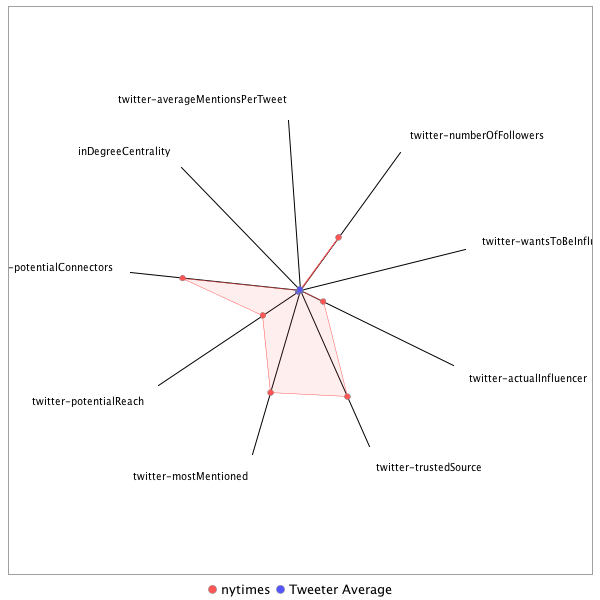

This tweeter has been identified as an influencer. Its target audience and hashtag and word usage are analyzed below.
Basic Statistics
Number of direct followers 3.8437e+07 The peak number of followers that the tweeter had during any time period. Number of retweeters 346 Number of agents that retweeted the key influencer. Number of secondary followers 64743512 The sum of the followers of those who retweeted the key influencer.
Measure Values of Other Influencers node versus Tweeter Average
This compares the measure values of the key influencer with the average values across all tweeters. For each measure line, the center-point means zero and the end-point means the maximum score across all tweeters.

Where was the influencer?
The agent is not recorded as being in any locations. Either he tweeted without geo-tags or we have no information about the tweets he sent.
The agent and retweeters were in 55 different locations.

What hashtags did the influencer use?
This displays the top ranked hashtags that the influencer and its retweeters used.
Rank hashtag Count 1 AHCA 868 2 BREAKING 732 3 Comey 713 4 Russia 653 5 pharma 645 6 Trump 487 7 TrumpCare 457 8 txlege 444 9 Obamacare 437 10 ParisAgreement 437 11 FDA 421 12 SCOTUS 400 13 biotech 385 14 ACA 360 15 ComeyHearing 357 16 mtal 349 17 CNNsotu 336 18 TheLead 305 19 ge2017 297 20 ISIS 271 21 GA06 270 22 MemorialDayWeekend 253 23 Manchester 235 24 NIH 234 25 adopt 220 26 Syria 206 27 VAGov 206 28 Iran 190 29 drugprices 190 30 Qatar 184 31 AdoptDontShop 170 32 dog 169 33 healthcare 165 34 LondonBridge 163 35 MemorialDay 163 36 AMR 151 37 ComeyTestimony 147 38 ComeyDay 145 39 NBC4DC 145 40 TrumpBudget 145 41 ComeyFiring 142 42 trumprussia 139 43 ForTheRecord 138 44 climate 128 45 covfefe 127 46 CongressionalBaseballGame 120 47 climatechange 118 48 China 117 49 sallyyates 116 50 ParisAccord 112 51 fakenews 109 52 ksleg 106 53 NorthKorea 105 54 FF 103 55 cat 103 56 NYC 102 57 drugpricing 99 58 SessionsHearing 96 59 Israel 95 60 Medicaid 95 61 ThisIsGoingWell 95 62 CDC 92 63 MTpol 92 64 FBI 91 65 Afghanistan 90 66 DPRK 89 67 US 89 68 DonaldTrump 88 69 rescue 88 70 Opioids 87 71 omnibus 85 72 GrenfellTower 84 73 wmata 84 74 FBIDirector 82 75 London 82 76 TheBachelorette 82 77 NATO 81 78 FOIA 79 79 foster 79 80 JamesComey 78 81 Turkey 75 82 Venezuela 74 83 MOLeg 72 84 science 72 85 spellingbee 72 86 CR 71 87 OTD 71 88 MTP 70 89 snl 70 90 TBT 69 91 BoroughMarket 68 92 ThisWeek 67 93 travelban 67 94 Mosul 65 95 Tillerson 65 96 MAGA 64 97 OOTT 64 98 Nats 61 99 Paris 61 100 yemen 61
Tweet List
This displays all of the tweets of the influencer ordered from earliest to latest. Click on a tweet to see its status in Twitter.
Number Tweet ID Date Message 1 859241361236783104 2017-05-01 23:01:19-04 "I have my own opinions. You can have your own opinions,” President Trump said. Then he terminated the TV interview. https://t.co/A6wvrYGhXp 2 859305558532345856 2017-05-02 03:16:24-04 President Trump's volatile behavior in East Asia is stirring fear in a longtime U.S. ally: Australia https://t.co/EemJsJ2fBH https://t.co/XIwM8xBVdp 3 859245177365549057 2017-05-01 23:16:28-04 Police account changes in killing of 15-year-old Jordan Edwards in Texas https://t.co/h8mcFhb39k 4 859667948998414336 2017-05-03 03:16:25-04 When no one stepped up to save Rosa Parks's home, an artist disassembled it and shipped it to his garden in Berlin https://t.co/H4FMj8gl9c 5 862140408461234177 2017-05-09 23:01:05-04 The front page of The New York Times for Wednesday, May 10, 2017 https://t.co/umbYQ6HM05 6 862246111947390977 2017-05-10 06:01:07-04 The front page of The New York Times for Wednesday, May 10, 2017 https://t.co/yPEiXwMXgl 7 861297607725002755 2017-05-07 15:12:06-04 Sinclair is said to be near a deal to buy Tribune Media, expanding the reach of its mostly right-leaning agenda https://t.co/2TjcqBI1Ch 8 860371691851186176 2017-05-05 01:52:50-04 A Texas morgue holds 212 bodies of people who died trying to cross the border. It also has the things they carried. https://t.co/I8LYUWIjeV https://t.co/eRy1xAQeVG 9 860955110628872193 2017-05-06 16:31:08-04 The Cassini spacecraft took another dive between Saturn and its rings. Here's what it saw. https://t.co/9tfbpke8dB 10 860403964004769792 2017-05-05 04:01:05-04 In a rare unifying moment, hospitals, doctors and insurers criticize the health bill https://t.co/PvXlDCjih9 11 861665769540767745 2017-05-08 15:35:03-04 There are 13 Republican senators writing a new health bill. They are all men. https://t.co/A5752KsyUD 12 861612183901351936 2017-05-08 12:02:07-04 Barack Obama warned Donald Trump against hiring Michael Flynn. Trump later named him national security adviser. https://t.co/QH1ohaIvyl 13 861293420094128128 2017-05-07 14:55:28-04 Emmanuel Macron, 39, is poised to become the youngest president in the history of France's Fifth Republic https://t.co/tdNGWUpTzT 14 860675767780462592 2017-05-05 22:01:08-04 Trump vowed to address the opioid crisis. The White House may now cut the drug policy office budget by 95%. https://t.co/ajsTS1vso2 15 862076230606233604 2017-05-09 18:46:04-04 The letter from President Trump terminating James Comey https://t.co/amI6xqBpK4 https://t.co/OWRw7gs3sG 16 862286371058323460 2017-05-10 08:41:06-04 Trump said that most in Washington had lost confidence in Comey and would "be thanking me" when "things calm down" https://t.co/qxhfNGVXlR 17 862018592417730562 2017-05-09 14:57:02-04 Those with health insurance get discounts on prescriptions — why don't the uninsured? https://t.co/ez6eaYCbWy 18 861904600173031425 2017-05-09 07:24:04-04 Jimmy Kimmel: "I would like to apologize for saying that children in America should have health care" https://t.co/kNDmvIpi1M 19 861554030824349696 2017-05-08 08:11:02-04 "The Trump relationship is an extra point for me," said a woman who attended the Kushner event in Shanghai https://t.co/DOGXvjV6GA 20 861412848295129088 2017-05-07 22:50:01-04 Review: Ivanka Trump's new book isn't offensive, but it is witlessly derivative https://t.co/EITlSJzz1i 21 861394225124040705 2017-05-07 21:36:01-04 E.P.A. Dismisses Members of Major Scientific Review Board https://t.co/hBJN8htcd1 22 860826750703595520 2017-05-06 08:01:05-04 GOP House candidate in Montana is caught on tape praising the health bill https://t.co/v7RKpDKvVs 23 860294494805274625 2017-05-04 20:46:05-04 This horse was supposed to win the Kentucky Derby. Then one bad step ended it all. https://t.co/gCz6nRbU9r 24 860330965457096705 2017-05-04 23:11:00-04 These are the sounds encountered by NASA's Cassini as it dove through the gap between Saturn and its innermost ring https://t.co/LwFAqHbIgT 25 860215111423860736 2017-05-04 15:30:39-04 The latest on GOP health bill: https://t.co/UOSkg9nFX1 What vote could mean: https://t.co/KzB4LNJCnY The next step: https://t.co/NTQzPLBUGW https://t.co/oUX7JJ8fUg 26 860095414451810304 2017-05-04 07:35:01-04 What Republicans changed in their health care bill to try to get more votes https://t.co/QGYPBbjmE4 27 859615095986552835 2017-05-02 23:46:24-04 The amendment to the GOP health law has stunned patients with cancer, heart disease, diabetes and other illnesses https://t.co/iYnIPiKlnf 28 859119071476031488 2017-05-01 14:55:22-04 "I have my own opinions. You can have your own opinions,” President Trump said. Then he terminated the TV interview. https://t.co/ibUencDllL 29 859915746285162496 2017-05-03 19:41:05-04 What Republicans changed in their health care bill to try to get more votes https://t.co/bgb3NfDrbc 30 863043638883962881 2017-05-12 10:50:12-04 Venezuelan authorities are rounding up some protestors and sending them not to ordinary courts, but to military ones https://t.co/KYqC6oABBT 31 862827483267293185 2017-05-11 20:31:17-04 Trump pressed Comey for loyalty at a private dinner in January. The FBI director promised only “honesty.” https://t.co/LsR9PXI8ND 32 863562337210576896 2017-05-13 21:11:20-04 Full list: Where every lawmaker stands on James Comey's firing so far https://t.co/VN73RYOFUz 33 863558180302970880 2017-05-13 20:54:48-04 In 1967, a quiet high school kid managed to snap a picture of Jimi Hendrix setting his guitar ablaze https://t.co/IOHmRSC3eg 34 863485525461786625 2017-05-13 16:06:06-04 Can prairie dogs talk? https://t.co/Sc62KtshFd https://t.co/osyvzV3A6w 35 863254010681323520 2017-05-13 00:46:09-04 Read the letter from Trump's lawyers that says his tax returns show no Russian income or debt, with "few exceptions" https://t.co/W30nLCMAmf 36 863217501659947010 2017-05-12 22:21:04-04 They are called “must-runs,” and they arrive every day at TV stations owned by the Sinclair Broadcast Group https://t.co/U72xiPrVVA 37 863227573366648832 2017-05-12 23:01:06-04 The only white wolf in Yellowstone had to be euthanized after being shot. The park is treating her death as a crime. https://t.co/ZPRO02EbVp 38 862648514307915776 2017-05-11 08:40:07-04 A bill in Texas would let adoption agencies reject families on religious grounds https://t.co/MZzMc5cpkt 39 862461272146812928 2017-05-10 20:16:05-04 A reporter was arrested in West Virginia after persistently asking questions of Health Secretary Tom Price https://t.co/tWUAp0C12s 40 862421007453368326 2017-05-10 17:36:05-04 Full list: Where every lawmaker stands on James Comey's firing so far https://t.co/u8CS3aj1T2 41 862272021207678977 2017-05-10 07:44:04-04 Emmanuel Macron's team created dozens of false email accounts, complete with phony documents, to confuse hackers https://t.co/2WAqyy63uV 42 862266720785924097 2017-05-10 07:23:01-04 Jeff Sessions had been charged with coming up with reasons to fire James Comey, administration aides said https://t.co/ryGFFjAKsz 43 862255927386406912 2017-05-10 06:40:07-04 "Not since Watergate has a president dismissed the person leading an investigation bearing on him" https://t.co/v5cbYJBBnp 44 859365213157699585 2017-05-02 07:13:27-04 Jimmy Kimmel: "If your baby is going to die, and it doesn't have to, it shouldn't matter how much money you make" https://t.co/wf9R2pmvIf 45 859120859855958016 2017-05-01 15:02:29-04 Breaking News: Bill Shine, a top Fox News executive, is departing amid turmoil https://t.co/uRmRoAS6bc 46 859511607155503104 2017-05-02 16:55:10-04 Mark is one of the many Times journalists devoted to increasing accountability and transparency in government. https://t.co/5pztt1CxJv 47 862087552999849988 2017-05-09 19:31:04-04 Attorney General Jeff Sessions had been charged with coming up with reasons to fire James Comey, officials said https://t.co/WWO4A2TupH 48 862497750964981760 2017-05-10 22:41:02-04 Read James Comey's farewell letter to the FBI https://t.co/4sbZw57udj 49 859781456469667842 2017-05-03 10:47:27-04 The couple verbally berated their 5 children, often to the point of tears, then racked up millions of YouTube views https://t.co/pF4ZHjbUrt 50 861566448078012416 2017-05-08 09:00:23-04 "For a generation of people, Snapchat is the place where they're getting all of their news" https://t.co/o9stirOf5u 51 864046467778060289 2017-05-15 05:15:05-04 Senate Republicans are starting to show signs of breaking away from President Trump https://t.co/VAx5QYLUHW 52 863928551111888896 2017-05-14 21:26:32-04 A piano recital in Beijing showed perhaps a softer side of Vladimir Putin https://t.co/kRfFJAafRt 53 863718100331634688 2017-05-14 07:30:16-04 Noncompete clauses are spreading across the workforce — making it tougher for Americans to get a raise https://t.co/pqsTbOYz4q 54 863548461966389249 2017-05-13 20:16:11-04 This girls' soccer team joined a boys' league, and won it https://t.co/kkrbdDVAHg https://t.co/6rP4zvOV2t 55 862389797066645505 2017-05-10 15:32:04-04 Full list: Where Congress stands on James Comey's firing so far https://t.co/efJU2PuSFr https://t.co/D2aQaLKrvo 56 862620818454478848 2017-05-11 06:50:04-04 The view from the FBI: "If the mood was dark, it is now pitch black" https://t.co/vgGl3296KG https://t.co/Yq6vt8w5ev 57 863136470424530944 2017-05-12 16:59:05-04 Andrew McCabe won over some FBI agents after he stood up to President Trump https://t.co/TwqKpIZmi2 58 862766544908165123 2017-05-11 16:29:08-04 For Trump supporters, the real outrage is the left's outrage over Comey's firing https://t.co/fOI6ZSUEC5 59 861766944508305408 2017-05-08 22:17:05-04 Kushner family stands to gain from visa rules in Trump’s first major law https://t.co/we1jqoK3An 60 861668292804653056 2017-05-08 15:45:04-04 Barack Obama warned Donald Trump against hiring Michael Flynn. Trump later named him national security adviser. https://t.co/djKnL9obMq 61 861023202260246528 2017-05-06 21:01:43-04 Warren Buffett, at Berkshire Hathaway meeting, condemns Republican health care bill https://t.co/LyairaKmrx 62 858798455560515584 2017-04-30 17:41:22-04 Ueli Steck, a renowned mountain climber nicknamed “the Swiss Machine,” died on Sunday at a camp near Mount Everest https://t.co/f5wsLtBiib https://t.co/lW4BoBgQiM 63 863596852566007809 2017-05-13 23:28:29-04 There are 13 Republican senators writing a new health bill. They are all men. https://t.co/rtknsmJsk9 64 861955436215496708 2017-05-09 10:46:05-04 This Iranian student looks so much like Lionel Messi that it almost landed him in jail for disrupting public order https://t.co/9GXE2yRoAr 65 860816681295372288 2017-05-06 07:21:04-04 Minnesota is having its largest measles outbreak in nearly 30 years https://t.co/RMd6nFvfgI 66 861252551089545220 2017-05-07 12:13:04-04 To remove Confederate statues, New Orleans needs a heavy crane. Every crane company in the area has received threats https://t.co/fFhZXXHsrc 67 859267804184399873 2017-05-02 00:46:23-04 President Trump appeared to question the necessity of the American Civil War https://t.co/ESZzfb7pmu 68 864133545769525250 2017-05-15 11:01:06-04 Young black Democrats, ready to run in 2018, are rejecting the view that their party must court white voters https://t.co/L4yoWv96Rz 69 860738783716810752 2017-05-06 02:11:32-04 Trayvon Martin will be awarded a posthumous university degree in aviation. He dreamed of becoming a pilot. https://t.co/6Ex5mgVvYt 70 859947199240822785 2017-05-03 21:46:04-04 A little-noticed target in the House health care bill: special education https://t.co/TH3YUwOJwF 71 862332770177208321 2017-05-10 11:45:28-04 Breaking News: Days before his firing, Comey asked the Justice Dept. for more money for the FBI inquiry into Russia https://t.co/K33pJO300n 72 864176566858809347 2017-05-15 13:52:03-04 Syria has built a crematory at a military prison to hide a large number of executions, U.S. officials said https://t.co/gUDJfxYtJF 73 864592260964511745 2017-05-16 17:23:53-04 Exclusive: Donald Trump asked James Comey to end the Michael Flynn inquiry in February, Comey wrote in a memo then https://t.co/03tFcCgCkz 74 862665618306289664 2017-05-11 09:48:05-04 Full list: Where every lawmaker stands on James Comey's firing so far https://t.co/bjzIJuz5dX 75 864592807717208064 2017-05-16 17:26:03-04 Comey left a paper trail on what he considered Trump's improper attempts to influence the FBI, his associates said https://t.co/Wchft03MF5 76 864737524761194496 2017-05-17 03:01:06-04 The Czech president was chatting with Vladimir Putin when he appeared to suddenly suggest that journalists be killed https://t.co/U2Cs7kWZ7l 77 864567673677647873 2017-05-16 15:46:10-04 Israel provided the classified information about an ISIS plot that Trump shared with Russia, officials said https://t.co/O02nkY6Ttd 78 864519584564604928 2017-05-16 12:35:05-04 "Pay Trump Bribes Here": An artist projected this image in large letters over the entrance to the Trump's hotel https://t.co/qJdnvJSbnI 79 864430990738980864 2017-05-16 06:43:03-04 How government secrets are declassified and disclosed https://t.co/gTRZyNwqnA https://t.co/NzYlxCsq8G 80 864313226468757504 2017-05-15 22:55:06-04 1987: U2's "The Joshua Tree" ponders 1980s America as both myth and presence 2017: The songs are "worth revisiting" https://t.co/yyZkxm25A4 81 864595742299738112 2017-05-16 17:37:43-04 What Donald Trump told James Comey about the Michael Flynn investigation, according to a memo Comey wrote https://t.co/fyzPyVuOuN https://t.co/2Y1grd7jYU 82 864292021481164801 2017-05-15 21:30:50-04 Clues point to North Korea-linked hackers as suspects in ransomware attacks, U.S. officials and private experts say https://t.co/AkAGpshBzK 83 864572977819594752 2017-05-16 16:07:15-04 The disclosure that Trump shared classified intelligence with Russia was a new blow to the White House https://t.co/HsyDESsMmZ 84 864562126005956608 2017-05-16 15:24:08-04 "Pay Trump Bribes Here": An artist projected this image in large letters over the entrance to Trump's hotel https://t.co/RzJtImKCRJ 85 864295858250158081 2017-05-15 21:46:05-04 In the latest computer ransomware attacks, signs are pointing to frequent culprit: North Korea https://t.co/iFNp5Smiha 86 866989865497485312 2017-05-23 08:11:06-04 "It was meant to be a dream, not a nightmare. There were children, blood, shoes, splattered all over the floor." https://t.co/zH7trRfEhH 87 865213087133126656 2017-05-18 10:30:49-04 What a year the last few days have been, huh? https://t.co/qEkGZWKWyi https://t.co/nOal7V7hmW 88 865501631030345729 2017-05-19 05:37:23-04 Breaking news: Prosecutors in Sweden have dropped a rape investigation into Julian Assange, the WikiLeaks founder https://t.co/AZRk6I3c8i 89 865628636405051392 2017-05-19 14:02:04-04 "SNL" wraps up its 42nd season this weekend. The show achieved its highest ratings in 2 decades: https://t.co/4ZPZmUEkLj 90 867093544980418560 2017-05-23 15:03:05-04 Roger Moore, the British actor who played James Bond in 7 films, has died at 89 https://t.co/7pjvEffe7L 91 865925350831869952 2017-05-20 09:41:06-04 Opinion: A conservative Christian college protest of Mike Pence https://t.co/F1dNVP79Qc 92 865013427500183553 2017-05-17 21:17:26-04 Breaking News: Trump aides knew Michael Flynn was under investigation before he became national security adviser https://t.co/qSYhjjJ2rj 93 865644494493851648 2017-05-19 15:05:05-04 What President Trump told Russian officials about firing James Comey https://t.co/dp3XNec5sq https://t.co/it8kjzNhNU 94 866444687980277761 2017-05-21 20:04:46-04 Antarctica’s ice sheet may have gone into the early stages of an unstoppable disintegration https://t.co/AcM7OmeGcc https://t.co/qRl3K9H9Mr 95 865028437303603233 2017-05-17 22:17:05-04 Trump’s transition team knew Michael Flynn was under investigation before he came to the White House https://t.co/YwheDdBNLU 96 866813981054447616 2017-05-22 20:32:12-04 Breaking News: The explosion at an Ariana Grande concert is being treated as a "terrorist incident," the police said https://t.co/tVNwfwRddx 97 865656853081989121 2017-05-19 15:54:11-04 Ladybugs' wings are 4 times the size of their bodies. Scientists figured out how they fold them away. https://t.co/wwRazblMHr https://t.co/WypcX2tXRT 98 865643998173470721 2017-05-19 15:03:06-04 President Trump told Russian officials that James Comey was "crazy, a real nut job" shortly after firing him https://t.co/EK9SwYnflW 99 864465527221125120 2017-05-16 09:00:17-04 An Arab TV series dramatizes life under ISIS https://t.co/I8OdTJAsmU https://t.co/DZXSvTr0NO 100 866254789516169217 2017-05-21 07:30:10-04 Watch these 4 virtual-reality films that take you on, above and below the Antarctic ice https://t.co/tAlsrVrfa3 101 866762237079425025 2017-05-22 17:06:35-04 Breaking News: Michael Flynn misled Pentagon officials about foreign contacts and income, a top House Democrat said https://t.co/2tVDhUXRqn 102 865352979913867265 2017-05-18 19:46:42-04 Phone calls. A dinner. An awkward hug. We have previously unreported details of Trump’s efforts to win over Comey. https://t.co/TrKLysvm3n 103 862487700108181505 2017-05-10 22:01:06-04 Trump barred the American press, but not Russia's, from a meeting with Russian officials https://t.co/SSMXCYhOKE 104 862431066736517121 2017-05-10 18:16:04-04 Comey made the appeal for more money to the deputy attorney general, who wrote the memo used to justify the firing https://t.co/aABIKwfmz4 105 861056235034038272 2017-05-06 23:12:58-04 These are the sounds encountered by NASA's Cassini as it dove through the gap between Saturn and its innermost ring https://t.co/RVbIGlW6WF 106 860207928615337984 2017-05-04 15:02:06-04 Lindsey Graham on the House bill: "Don’t know what it’s in it. Waiting to see if it’s a boy or a girl." https://t.co/5Uv9xBQUYG 107 862983200083238917 2017-05-12 06:50:03-04 The White House’s story about Comey's firing is unraveling: Among those contradicting the president is the president https://t.co/MnHVvbBidy 108 865180537698308096 2017-05-18 08:21:29-04 Breaking News: President Trump lashed out after the naming of a special counsel https://t.co/InsfMhKDlh 109 859573595290423298 2017-05-02 21:01:29-04 CNN refused a Trump ad calling it "fake news." His campaign accused the network of "censorship." https://t.co/oide899NU9 110 867028376736993280 2017-05-23 10:44:08-04 Former CIA head said publicly for the first time that he was concerned about possible Russia ties to Trump campaign https://t.co/25YGF4eoXA 111 865711417915318272 2017-05-19 19:31:00-04 James Comey will testify in an open committee session sometime after Memorial Day, although no date has yet been set https://t.co/mmIA8ldof0 112 866402729081671680 2017-05-21 17:18:02-04 "Jailing reporters would put us on par with nations like Turkey and China" https://t.co/z6Z2ASjKEL 113 866949353704968192 2017-05-23 05:30:07-04 "After our darkest of nights, Manchester is today waking up to the most difficult of dawns," the city's mayor said https://t.co/6Md6rLeW6Z 114 867222641438060545 2017-05-23 23:36:04-04 Baltimore-area renters complain about a neglectful, litigious landlord. Few of them know it's Jared Kushner. https://t.co/F5MfSQKif1 115 865783502444396544 2017-05-20 00:17:27-04 How a Golf Course Is Reshaping a New Orleans Neighborhood https://t.co/47rID3WrCS 116 867118455572619265 2017-05-23 16:42:04-04 The Christian governor of Jakarta withdrew an appeal of his 2-year sentence for blasphemy against Islam https://t.co/ETghkcI17O 117 867109659198582784 2017-05-23 16:07:07-04 Fox News retracted a story about the murder of Seth Rich, a DNC staff member https://t.co/NBo77aQ3LC 118 866659966991704066 2017-05-22 10:20:12-04 "The whole world knows Fyre's name now," Ja Rule said. "This will pass, guys." https://t.co/scGyZ9B1rg 119 866622910101942272 2017-05-22 07:52:57-04 "I have never seen anything like it," the head of the Office of Government Ethics said https://t.co/IJuGafKW0J 120 865614693263691777 2017-05-19 13:06:39-04 @JamesStewartNYT @washingtonpost #FF @washingtonpost 121 865549483366416385 2017-05-19 08:47:32-04 Breaking News: Anthony Weiner will plead guilty to transferring obscene material to a minor in a "sexting" inquiry https://t.co/rNM9HUPFdd 122 865172882925776896 2017-05-18 07:51:04-04 There’s been a year’s worth of headlines in just a week. It's been exasperating for some, exhausting for many. https://t.co/2Dqfu8xoh2 123 865659596672712705 2017-05-19 16:05:05-04 In a gilded room, Saudi officials had a weapons wish list, and Jared Kushner had the number of Lockheed’s CEO https://t.co/3udHTHOiQL 124 865207878046674944 2017-05-18 10:10:07-04 Trump leaves on Friday for a first trip outside of the U.S. as the country’s leader. He doesn’t really want to go. https://t.co/oF16TVEBA3 125 865138667794436096 2017-05-18 05:35:06-04 Chris Cornell, who gained fame as the lead singer of Soundgarden and Audioslave, has died. He was at 52. https://t.co/vcFGuuG0Yf 126 865240895293206529 2017-05-18 12:21:19-04 Breaking News: A car in New York’s Times Square has struck several pedestrians. It's not clear how many are injured. https://t.co/GLFmmq82VW 127 869823776086798337 2017-05-31 03:52:03-04 No one at the White House could immediately be reached for comment about President Trump's "covfefe" tweet https://t.co/tjLibswyp4 128 869505932790829056 2017-05-30 06:49:03-04 "If the U.S. is leaving a vacuum, that's going to be filled by somebody" https://t.co/0HwWZzPjcC 129 868855896797065218 2017-05-28 11:46:03-04 Chancellor Angela Merkel of Germany: "There are no signs of whether the U.S. will stay in the Paris accords or not." https://t.co/73jJhio8Rd 130 868399609344872448 2017-05-27 05:32:55-04 Car Bomb Targeting Elite Afghan Force Kills at Least 12 https://t.co/zm3aNFAGdB 131 867926778853064706 2017-05-25 22:14:04-04 First election results are coming in from Montana. Follow the vote here. https://t.co/MWGIWoq8vm 132 869400924564967425 2017-05-29 23:51:47-04 With Italy No Longer in U.S. Focus, Russia Swoops to Fill the Void https://t.co/qH2EM3d1mr 133 868293627193282560 2017-05-26 22:31:47-04 Zbigniew Brzezinski, who was President Carter's national security adviser during the Iran hostage crisis, has died https://t.co/7ZQ3xqirdW 134 868991035543887872 2017-05-28 20:43:02-04 "This seems to be the end of an era, one in which the United States led and Europe followed" https://t.co/8PlG5o96DS 135 868501070485630979 2017-05-27 12:16:05-04 Read the statement from G-7 leaders saying that all nations except the U.S. remain loyal to the Paris climate deal https://t.co/96vW31gLut 136 869399695822647298 2017-05-29 23:46:54-04 A 1-hour walk, 3 times a week, has benefits for dementia https://t.co/wO7TbaXTMi 137 868169372984127490 2017-05-26 14:18:02-04 What Twitter's new emoji #indigenousau means for Aboriginal Australians https://t.co/WH1x4LBuaz 138 868297254628622336 2017-05-26 22:46:12-04 Zbigniew Brzezinski, National Security Adviser to Jimmy Carter, Dies at 89 https://t.co/B5lPJyAfNE 139 867303162201374720 2017-05-24 04:56:02-04 Baltimore-area renters complain about a neglectful, litigious landlord. Few of them know it's Jared Kushner. https://t.co/3qT0aI4Yej 140 868925287463047168 2017-05-28 16:21:47-04 Baltimore renters complain about a neglectful landlord. Few know it's Jared Kushner. https://t.co/wGUAUoKFlq By @AlecMacGillis/@ProPublica 141 867827632460705792 2017-05-25 15:40:05-04 Video footage at a NATO summit shows President Trump appearing to push his way to the front of a “family photo” https://t.co/vkYOO0Zews 142 867709366518132737 2017-05-25 07:50:08-04 Days before he was scheduled to die, he organized his own wake. And it had one twist: he would be present at it. https://t.co/7N1EQUb2Pm https://t.co/6TJJ9tITUV 143 868628638547234816 2017-05-27 20:43:00-04 Baltimore-area renters complain about a neglectful, litigious landlord. Few of them know it's Jared Kushner. https://t.co/D38N5pCes1 144 867858068696158210 2017-05-25 17:41:02-04 World leaders were gathering for a “family photo” at a NATO summit when Trump appeared to push his way to the front https://t.co/G5qtTQrLyZ 145 868556777239048192 2017-05-27 15:57:27-04 Gregg Allman died at his home in Georgia. He was a principal architect of Southern rock. https://t.co/GHpGPLXiDS 146 868436886376906753 2017-05-27 08:01:03-04 After a standoff, the White House backs down on keeping ethics waivers secret https://t.co/C1FgT34Ltt 147 869498642977214464 2017-05-30 06:20:05-04 Several people who knew the Manchester bomber have said they had warned the authorities about his radical views https://t.co/TBbKUzZ5hW 148 868896689528197120 2017-05-28 14:28:08-04 Homeland Security secretary calls Jared Kushner's reported effort to form secret channel with Russia "a good thing” https://t.co/TeTHsRQJGW 149 868719482658856960 2017-05-28 02:43:59-04 California is emerging as the de facto negotiator for the U.S. on the environment https://t.co/PKM8aJZwNt 150 867923501591691264 2017-05-25 22:01:02-04 Who will win the House race in Montana? Keep this page open for live results when they come in. https://t.co/5yLoQlbxfp 151 869839893081489409 2017-05-31 04:56:06-04 President Trump is interviewing 2 more candidates for FBI director https://t.co/Q6DRouvU8C 152 867367119104749568 2017-05-24 09:10:10-04 Alison Howe and Lisa Lees, 2 mothers who were friends, were killed in Manchester while waiting for their daughters https://t.co/VTi95PuMu1 153 867356012885487616 2017-05-24 08:26:02-04 Salman Abedi, who carried out the Manchester attack, had recently traveled to Syria and Libya, officials said https://t.co/L53OMTlTtQ 154 867384738360766465 2017-05-24 10:20:11-04 Salman Abedi's parents in Libya had become worried about his radicalization and seized his passport, a friend said https://t.co/EqgMDKz37S 155 867232707645976580 2017-05-24 00:16:04-04 Trump praised Rodrigo Duterte of the Philippines in a phone call for doing an “unbelievable job on the drug problem” https://t.co/3NO7kdn9EP 156 10643701 2007-03-21 15:41:30-04 "Word up!" It is I, the Gray Lady, with a "shoutout" to all my hip young friends. Just wanted you to know I've added new specialized feeds. 157 874912452768608257 2017-06-14 04:52:38-04 Just last month, Trump lauded the House health bill as a “great plan” that was “very, very incredibly well-crafted” https://t.co/Noq5ufgh4m 158 875068344935886848 2017-06-14 15:12:06-04 Drew Gilpin Faust, the first woman to serve as Harvard’s president, will step down next year https://t.co/9yZ6YuLehP 159 873383245718720513 2017-06-09 23:36:07-04 White House's social media director sent a tweet that violated a federal law, a federal agency said https://t.co/HCIfew1PTW 160 874951053921460224 2017-06-14 07:26:01-04 ISIS Captures Tora Bora, Once bin Laden’s Afghan Fortress https://t.co/K68sGHzl6J 161 872819811591626752 2017-06-08 10:17:13-04 The events that led to James Comey's firing, and how the White House's story changed https://t.co/EY3rbE7sVS 162 873724231850307584 2017-06-10 22:11:04-04 Most fake news stories prove impossible to trace to their origin. But not this one. https://t.co/g3I2hZQZl5 163 874835290539655169 2017-06-13 23:46:01-04 Dave Chappelle is throwing a 10-show party at Radio City, with Chris Rock, Trevor Noah, the Roots and more https://t.co/3bZtG0qFCC 164 874350621918363648 2017-06-12 15:40:07-04 For their first date, in 1949, they headed to the movie theater. But each entered separately. https://t.co/0GgXqDMp8q 165 872905216248643589 2017-06-08 15:56:36-04 @nytimes The benefits of talking to yourself https://t.co/rqMuKOwqwu 166 874820200696348673 2017-06-13 22:46:03-04 “I do recall being one of the last ones to leave. I don’t know how that occurred.” https://t.co/bmpoBk0C0Y 167 874812646008258560 2017-06-13 22:16:02-04 Behind the scenes, Trump entertained the idea of firing Robert Mueller even as his staff tried to discourage him https://t.co/JB80Ax3Srz 168 874816425709449218 2017-06-13 22:31:03-04 In Virginia's governor's race, Republican Ed Gillespie will face the Democrat Ralph Northam https://t.co/PQUYGSqqDH 169 874730618055208961 2017-06-13 16:50:05-04 "If there’s a production of 'Julius Caesar' that doesn’t upset you, you’re sitting through a very bad production." https://t.co/DuK0xOKbdo 170 874636252422787072 2017-06-13 10:35:07-04 Jessica Colotl, who became a symbol of the immigration debate, will be allowed to stay in the U.S. for now https://t.co/6YDcvOw6zk 171 874582388109717504 2017-06-13 07:01:04-04 Sandy Hook families criticize Megyn Kelly for planned Alex Jones interview https://t.co/4RPxtoX0ze 172 874480449262944256 2017-06-13 00:16:00-04 Behold the liver, the astonishing blob that runs your body https://t.co/0eWM2q1Hr7 173 874499338894024704 2017-06-13 01:31:04-04 A second appeals court ruled against President Trump’s revised travel ban https://t.co/9Yp0Vx49rv 174 874515691029876736 2017-06-13 02:36:03-04 Preet Bharara said that President Trump tried to cultivate a relationship with him in the months before he was fired https://t.co/yIRyWHWGEZ 175 874506893842141184 2017-06-13 02:01:05-04 A longtime friend said President Trump is considering firing the special counsel leading the Russia investigation https://t.co/PMupSh7uDP 176 874484237315002368 2017-06-13 00:31:03-04 “We thank you for the opportunity and the blessing to serve your agenda,” Reince Priebus said to President Trump https://t.co/87xU4LFr39 177 874473667132104704 2017-06-12 23:49:03-04 How Two Gulf Rivals Helped Inflame the Middle East https://t.co/izDy3Nqa0T 178 874472916246818817 2017-06-12 23:46:04-04 She sold a prized painting for over $150 million to help with criminal justice reform. "This is what I need to do." https://t.co/OiPG6qBfTX 179 874465347147051008 2017-06-12 23:16:00-04 Trump Administration Says Financial Watchdog Agency Should Be Defanged https://t.co/DyCAl4r0bN 180 874461587326865408 2017-06-12 23:01:03-04 America’s religious leaders are even more politically divided than the rest of us https://t.co/bu5KlVQEj4 181 874469142367281152 2017-06-12 23:31:05-04 The “Road of Tomorrow” — and other @nytimes photos from the past https://t.co/suBrLyf10L https://t.co/ugysoVGglZ 182 874465369729236994 2017-06-12 23:16:05-04 For their first date, in 1949, they headed to the movie theater. But each entered separately. https://t.co/NDyCYOGlfw 183 874454055942332417 2017-06-12 22:31:08-04 All the ways Apple’s iOS 11 will change your iPhone https://t.co/BulMJadaSU 184 874447746241089538 2017-06-12 22:06:03-04 Sandy Hook families criticize Megyn Kelly for planned Alex Jones interview https://t.co/jFspFu77NR 185 874450268783595520 2017-06-12 22:16:05-04 A friend said President Trump might fire Robert Mueller as conservatives began to attack his credibility https://t.co/GprV9ZfgmC 186 874361934908452865 2017-06-12 16:25:04-04 A second appeals court ruled against President Trump’s revised travel ban https://t.co/3rt18NcPi3 187 874343683079974912 2017-06-12 15:12:33-04 Blue tuxedos, blue ties, blue dresses: At the Tony Awards, the shade of the night sent a potent message https://t.co/tXtewTtZWa 188 874346857408888832 2017-06-12 15:25:10-04 Ivanka Trump insisted that her father came away from James Comey’s testimony “incredibly optimistic” https://t.co/8QmoEaaP08 189 874319650519228416 2017-06-12 13:37:03-04 Lessons from Finland on burying radioactive waste https://t.co/80g8KOpSzS 190 874317393438191616 2017-06-12 13:28:05-04 America’s religious leaders are even more politically divided than the rest of us https://t.co/UX8DC7Hebi 191 874312857118265344 2017-06-12 13:10:03-04 Your liver's powers are so profound that, “What am I, chopped liver?” can be seen as a kind of humblebrag https://t.co/mKqOZVGawi 192 874312964257583105 2017-06-12 13:10:29-04 Breaking News: A second appeals court ruled against President Trump’s revised travel ban https://t.co/FsWi70smfz 193 874300277490405377 2017-06-12 12:20:04-04 Aleksei Navalny, the Kremlin critic, was detained in Moscow as antigovernment demonstrations unfolded across Russia https://t.co/TJ5RBwU9pk 194 874297267271946240 2017-06-12 12:08:06-04 Preet Bharara said that President Trump tried to cultivate a relationship with him in the months before he was fired https://t.co/RgwekCaDse 195 874117850327285761 2017-06-12 00:15:10-04 Why "radical body love" is thriving on Instagram https://t.co/iUj8gOS12s 196 874113804602404866 2017-06-11 23:59:05-04 “Their artistic and creative direction crossed the line on the standards of good taste,” Delta said in a statement https://t.co/zRrzbhdbPX 197 874107751693201413 2017-06-11 23:35:02-04 How Ben Platt became the toast of Broadway https://t.co/ttuOYytOVQ 198 874104322413518848 2017-06-11 23:21:25-04 “Dear Evan Hansen” was the big winner at the #TonyAwards2017 with 6 awards, including best musical https://t.co/ZrXxh7jzAR 199 874064126728957954 2017-06-11 20:41:41-04 Ducks: A Point of Unity in a Capital of Ruffled Feathers https://t.co/D5KoPfflxm 200 874064980617908224 2017-06-11 20:45:05-04 Kevin Spacey, host of the #TonyAwards2017, on Broadway's dark offerings this year https://t.co/YUjpH5rNHU https://t.co/74LpxgvDNQ 201 874058912756117506 2017-06-11 20:20:58-04 Preet Bharara Says Trump Tried to Build Relationship With Him Before Firing https://t.co/0P2oLjEes3 202 873732594491428865 2017-06-10 22:44:18-04 A Texas teacher is out of a job after she gave mock awards to students, like “most likely to be a terrorist” https://t.co/oaik8DC2CP 203 873980170033561601 2017-06-11 15:08:04-04 The house that Richard Loving built for his wife is empty now. It sits down the road from where they're buried. https://t.co/Lj6NYAJaE1 204 873962540488953856 2017-06-11 13:58:01-04 Trump, back at the golf getaway where he decided to fire Comey, took his harshest shot yet against the ex-FBI chief https://t.co/536mbtBkdW 205 873952471521034240 2017-06-11 13:18:01-04 The journey of one false tweet about James Comey shows how disinformation can become a runaway story https://t.co/kNCKDOQ5ck 206 873975131906998272 2017-06-11 14:48:03-04 Opinion: It's the Olympics for Trump apologists https://t.co/49gioLJ2OB 207 873977194070016002 2017-06-11 14:56:15-04 Trump's personal lawyer has advised White House aides, sources say, and talked about establishing an office there https://t.co/po8ijrOvpE 208 873977641161953280 2017-06-11 14:58:02-04 Trump's private lawyer, Marc Kasowitz, has counseled White House staff and exerted influence over legal strategy https://t.co/0yjxsdBYeR 209 873944943466881025 2017-06-11 12:48:06-04 Katy Tur on Trump: "Had I exhibited any sign that I was intimidated or scared of him, he would have rolled over me" https://t.co/pM0Kq5Bjce 210 873689089710620672 2017-06-10 19:51:26-04 Hawaii became the first state to pass a law committing to the Paris climate accord, defying President Trump https://t.co/pMiVNnbWcl 211 873925019595833345 2017-06-11 11:28:56-04 Rafael Nadal has won his 10th French Open title, continuing his clay-court dominance https://t.co/y5nSroSJdT https://t.co/LxD6zlwpi1 212 873929830861082624 2017-06-11 11:48:03-04 ISIS has been focused for years on attacking Britain and Iran. In the past week, it was successful in both. https://t.co/5KY9NlD2TJ 213 873927324290473984 2017-06-11 11:38:05-04 To understand Betsy DeVos's educational views, view her education https://t.co/Vmzgvpc1Rw 214 873932352808005632 2017-06-11 11:58:04-04 2 toddlers died in Texas after being left in a car for more than 15 hours, a sheriff said https://t.co/PwKitc6Puf 215 873937379907817472 2017-06-11 12:18:02-04 Since April, Wikipedia has been banned in Turkey. Students, and the merely curious, are struggling to get answers. https://t.co/A5u5ywdIRt 216 873939907076661250 2017-06-11 12:28:05-04 Religious liberals sat out of politics for 40 years. Now they want in the game. https://t.co/zsR91TaM9O 217 873919762534989825 2017-06-11 11:08:02-04 Analysis: James Comey’s warning about Russia was overshadowed by his confrontation with President Trump https://t.co/Oc2RfP3FVl 218 873895119874928640 2017-06-11 09:30:07-04 Anonymous online sales of opioids are surging, and people are dying. Despite arrests, new merchants quickly pop up. https://t.co/m4yI9eOArv 219 873904664844132353 2017-06-11 10:08:03-04 A pro-Trump conspiracy, a false tweet about James Comey and a runaway story https://t.co/1C6oyXC7jO 220 873909693034496002 2017-06-11 10:28:01-04 Democrats are facing a struggle between the demands of their liberal base and the limits of their power https://t.co/htA42Obb6b 221 873899865717170180 2017-06-11 09:48:58-04 Trump Calls Comey ‘Cowardly’ in Latest Twitter Outburst https://t.co/HiltCb3ppp 222 873902240007933954 2017-06-11 09:58:24-04 The 25 best movies of the 21st century so far https://t.co/LGOl626k2c 223 873907185822162945 2017-06-11 10:18:04-04 Despite scant science to prove it works, the maker of Vivitrol has used political connections to push for its use https://t.co/5TyiH1Taei 224 873912227895672834 2017-06-11 10:38:06-04 Jeff Sessions will testify in a Senate hearing on Russia’s interference in the 2016 election https://t.co/iuq9HZed6d 225 873914742611562497 2017-06-11 10:48:05-04 Opinion: "Imagine my horror at discovering that the United States is more calcified by class than Britain" https://t.co/h25WWCkqUy 226 873887643028815872 2017-06-11 09:00:24-04 Everyone knows populism has fundamentally altered the political rules. But the new rules remain elusive. https://t.co/kZOAqW14IK 227 873880038407421953 2017-06-11 08:30:11-04 Trump said the Chinese are stealing U.S. jobs. In Ohio, they’re creating them. More than 1,500 of them, in fact. https://t.co/lssulXHoII 228 873828118267559936 2017-06-11 05:03:52-04 After the disastrous snap election, Theresa May turned to the D.U.P. But, who are they and what do they want? https://t.co/2aloBZsA5W 229 873866382521360384 2017-06-11 07:35:55-04 As President Trump rolls back Obamacare's birth control coverage mandate, some states are "leading the resistance" https://t.co/icuKrjICLd 230 873763137543077888 2017-06-11 00:45:40-04 Jon Ossoff has shattered fund-raising records https://t.co/0MAhVU9Jo7 231 873745302620123136 2017-06-10 23:34:48-04 If you’re younger than 35 and like the NBA, read this article about why people like you like the NBA https://t.co/33QavrxOwz 232 873736810903613440 2017-06-10 23:01:03-04 An 8-year-old girl with short hair was barred from a soccer tournament after someone complained that she was a boy https://t.co/Dbp8rdVOf0 233 873710659615195136 2017-06-10 21:17:08-04 A resurgent religious left takes on the religious right and proclaims: We are the real Moral Majority https://t.co/XFiXzhyLmK 234 873652011648131072 2017-06-10 17:24:05-04 The religious left is trying to fight back against President Trump's policies — and to take on the religious right https://t.co/oEOUBkYm8C 235 873640433875734528 2017-06-10 16:38:05-04 2 U.S. soldiers were killed and 2 others wounded after an Afghan soldier opened fire on them in Afghanistan https://t.co/zHQ9amLMFs 236 873637152164368384 2017-06-10 16:25:03-04 Opinion: The reality is that Vladimir Putin isn't winning. He is, in fact, on a losing streak. https://t.co/6usoYfyHE8 237 873631615234301952 2017-06-10 16:03:03-04 Adam West, who played "Batman" in the campy 1960s series, has died at 88 https://t.co/TTYiL8ZfAa 238 873613258565005312 2017-06-10 14:50:06-04 Theresa May has joined a long line of politicians who have gambled that they understood the populist wave and lost https://t.co/VeWiWpsuCH 239 873329128430342145 2017-06-09 20:01:04-04 A crack in an Antarctic ice shelf is 8 miles from creating an iceberg the size of Delaware https://t.co/Ef0YENGomr 240 873584554090659840 2017-06-10 12:56:02-04 After black employees at Fox News filed an anti-discrimination suit, their lawyers received death threats https://t.co/croGRlHxQp 241 873577017253535745 2017-06-10 12:26:05-04 Masquerading as a reporter, an assassin tried to kill 2 foes of Vladimir Putin in Ukraine https://t.co/wlioaNDoWL 242 873535487432151040 2017-06-10 09:41:04-04 Modern Love: "I’m not sure I could have had one marriage without the other" https://t.co/KCeZvtuGgf 243 873531716547354626 2017-06-10 09:26:05-04 A crack in an Antarctic ice shelf is 8 miles from creating an iceberg the size of Delaware https://t.co/SgqTCjMtJU 244 873374422157152256 2017-06-09 23:01:03-04 Here's a selection of political writing from the right and left in reaction to James Comey’s testimony https://t.co/uq23CuqHYc 245 873366894652391429 2017-06-09 22:31:08-04 Barack Obama’s global visits inspire wistful comparisons of then and now https://t.co/hDe03SGwQa https://t.co/CuH0K0PrJW 246 873370659551932418 2017-06-09 22:46:06-04 What turned the British election? Maybe the youth vote. https://t.co/z4jy88IZGK 247 872867055040593921 2017-06-08 13:24:57-04 We are looking into James Comey's statements, and we will report back with more information as soon as we can. https://t.co/v9OzWbbjUP 248 873027146704224256 2017-06-09 00:01:06-04 Aziz Ansari tried out the material he ended up using on his Saturday Night Live monologue on 111 different occasions https://t.co/xe8rEvy50V 249 872985616916545536 2017-06-08 21:16:05-04 Who are the people who questioned James Comey? A look at the members of the Senate Intelligence Committee. https://t.co/nuebdIQYUn 250 872974289896693761 2017-06-08 20:31:04-04 Full transcript and video: James Comey's testimony on Capitol Hill https://t.co/ieuzs9uyW2 251 872994417996640256 2017-06-08 21:51:03-04 Comey was going to speak for himself, and the people of Washington were not going to miss it https://t.co/4yYs31ATM9 252 872996931206881281 2017-06-08 22:01:02-04 House passes bill to erase a number of core financial regulations put in place by the Dodd-Frank Act https://t.co/xH1Wm9lBxc 253 872990637699870720 2017-06-08 21:36:02-04 News Analysis: Comey's testimony was the most damning by a law enforcement official against a president in decades https://t.co/BfH98vMmeF 254 872966743236517888 2017-06-08 20:01:05-04 Results for the British general election are starting to come in. Follow the vote here. https://t.co/e4Q4sBN8wN 255 872911633705832448 2017-06-08 16:22:06-04 Andrea Constand’s 2 days at the center of the Cosby trial captured why sexual assault cases are so polarizing https://t.co/V94Yrt1njG 256 872908636053438464 2017-06-08 16:10:11-04 Review: "Orange Is the New Black" goes all in on the drama in its new season https://t.co/zey1c6gx0z 257 872906837091389441 2017-06-08 16:03:02-04 "I was honestly concerned that he might lie": The video highlights from Comey’s testimony about Trump https://t.co/j1CrjDCaQU 258 872914405465493506 2017-06-08 16:33:06-04 Comey, no longer constrained by the formalities of his job, offered a blunt, plain-spoken assessment of Trump https://t.co/bgCjdNIxD8 259 872904796159840256 2017-06-08 15:54:55-04 The benefits of talking to yourself https://t.co/rqMuKOwqwu 260 872688787821924352 2017-06-08 01:36:35-04 Led by Rachel Maddow, MSNBC surges to unfamiliar spot: No. 1 in prime time https://t.co/DS9LJHMfZX 261 872779763731050498 2017-06-08 07:38:05-04 Dodd-Frank was intended to prevent another financial crisis. Now lawmakers are moving to dismantle it. https://t.co/5k2l3J0Cy0 262 872886470004101120 2017-06-08 14:42:06-04 Takeaways from the Georgia special election debate: This time, Jon Ossoff and Karen Handel leveled sharper attacks https://t.co/LWJHenGcia 263 872855162922184704 2017-06-08 12:37:42-04 One NYT reader's reaction to Comey’s testimony before the Senate Intelligence Committee https://t.co/dfgyJl64Jz https://t.co/7aMJ5RBPNa 264 872835483763699712 2017-06-08 11:19:30-04 One NYT reader's reaction to Comey’s testimony before the Senate Intelligence Committee https://t.co/5LZJuZTHcq https://t.co/40rQHenWeg 265 872838550512914433 2017-06-08 11:31:41-04 Comey: "Why did he kick everybody out of the Oval Office?… That to me as an investigator is a very significant fact" https://t.co/uCRfnfGuJd 266 872839315860185091 2017-06-08 11:34:44-04 James Comey said he helped leak the contents of his memos, with the aim of getting a special counsel named https://t.co/px7aCUIeJF 267 872816502671630341 2017-06-08 10:04:05-04 Pictures: Voting is underway today in Britain https://t.co/X5eHS1mzK4 https://t.co/OsDINpMWHp 268 872816911851106304 2017-06-08 10:05:42-04 A guide to all the Comey news: https://t.co/AZU0l1oPqy 269 872817715244920832 2017-06-08 10:08:54-04 James Comey’s testimony about Trump and the FBI's Russia inquiry is starting. Watch it live with our reporters. https://t.co/z0W5XmiU6t 270 872818522438717440 2017-06-08 10:12:06-04 Democrats have a tangled history with Comey. But now, it's just like the saying: The enemy of my enemy is my friend. https://t.co/T1j6zxh9pY 271 872814978113449984 2017-06-08 09:58:01-04 The key questions about the Comey hearing https://t.co/HAIqg6zx0v 272 872815261417603072 2017-06-08 09:59:09-04 James Comey's testimony is expected to start soon. Join us for live video and analysis from our reporters. https://t.co/AvruVGHQC9 273 872645885527773184 2017-06-07 22:46:06-04 Villages that make up Cinque Terre in Italy are reviving the art of terracing to prevent the land from washing away https://t.co/VUfg6dF0dC 274 872638324170776576 2017-06-07 22:16:03-04 Why running may be good for your back https://t.co/QeYhqvlt4S 275 872638324447510529 2017-06-07 22:16:04-04 “It’s must-see TV”: Millions are expected to pause on Thursday to take in James Comey’s testimony https://t.co/zA9eyvFnF8 276 872625750654021633 2017-06-07 21:26:06-04 North Korea fires more missiles as Seoul puts off U.S. defense system https://t.co/ml3Gtye8Ee 277 872631035065978880 2017-06-07 21:47:06-04 The full text of James Comey's prepared remarks for his Senate testimony https://t.co/fkiOoiksYC 278 872623240677556225 2017-06-07 21:16:07-04 Canada’s strategy on climate change: Work with American states https://t.co/Ngo6FXN1tS 279 872634555156529152 2017-06-07 22:01:05-04 A fossil discovery pushes back Homo sapiens over 100,000 years and indicates our species evolved all over Africa https://t.co/wdi0XDxHlM 280 872822052415299587 2017-06-08 10:26:08-04 Comey, on whether President Trump tried to stop the Russia investigation: "Not to my understanding, no" https://t.co/0Wu00RHHfd 281 874457823199055872 2017-06-12 22:46:06-04 Melania Trump leaves New York behind for the White House https://t.co/G7tTHe8pWp 282 871755458725515265 2017-06-05 11:47:52-04 A high school student walked out of a documentary: "It was just so biased toward saying climate change is real." https://t.co/PHGAc0m6bZ 283 874227213272584193 2017-06-12 07:29:44-04 Breaking news: The Kremlin critic Aleksei A. Navalny has been arrested as anticorruption protests roll across Russia https://t.co/uQp51nXHSk 284 873842277025800192 2017-06-11 06:00:08-04 Emmanuel Macron has recruited dozens of nonpoliticians, including many women and minorities, to help him run France https://t.co/WHK05qEITF 285 874831544417964032 2017-06-13 23:31:08-04 Kamala Harris was (again) interrupted while pressing a Senate witness https://t.co/fbmINEGzkm 286 874033520443875330 2017-06-11 18:40:04-04 Monday will mark 50 years since the Supreme Court's Loving vs. Virginia ruling, which invalidated miscegenation laws https://t.co/JI6oZgeQLE 287 873302700338937857 2017-06-09 18:16:03-04 A photo of James Comey takes the internet by storm https://t.co/pulDLFBynf 288 873042241547149313 2017-06-09 01:01:05-04 Gripped by Comey fever, Washington plays hooky https://t.co/S0ea1yl1Ba 289 872666001808252929 2017-06-08 00:06:02-04 Hawaii became the first state to pass a law committing to the Paris climate accord, defying President Trump https://t.co/ZhACLvFTMX 290 872925720758059012 2017-06-08 17:18:04-04 @jaketapper We examine James Comey's statements about one of our articles on the Russia investigation https://t.co/mVVSGw2kBp 291 872826093262299136 2017-06-08 10:42:11-04 "Comey is making clear here that he never trusted Trump from the very beginning," @juliehdavis writes. https://t.co/KBpHZadR0t https://t.co/kQQNvYFzhz 292 875053343072284673 2017-06-14 14:12:29-04 The Fed raising its benchmark interest rate again is a sign of confidence in the health of the U.S. economy https://t.co/pahpC4Cls4 293 870359595981692929 2017-06-01 15:21:12-04 If President Trump withdraws the U.S. from the Paris climate accord, will other countries still commit to it?https://t.co/amOIPZiCDz https://t.co/K0YyQoU5Hi 294 870143135019667456 2017-06-01 01:01:04-04 Raymond Pfeifer, 9/11 firefighter who sought care for survivors, dies at 59 https://t.co/W9Lc8DAyfi 295 870598633170907136 2017-06-02 07:11:03-04 The CIA's "Dark Prince" hunted bin Laden and ran America's drone strike program. His next task? Iran operations. https://t.co/dPwSf6xkww 296 872469085661036545 2017-06-07 11:03:34-04 A week after a bombing that killed over 150 people, @MujMash shares the view from the streets of Kabul https://t.co/5scbWXGOzC https://t.co/wCWmz6tqeW 297 871845857762652160 2017-06-05 17:47:05-04 A ballet dancer leapt down to the subway tracks and lifted an unconscious man to safety over the weekend https://t.co/5q98aOTGXk 298 872358809833963521 2017-06-07 03:45:22-04 Led by Rachel Maddow, MSNBC surges to unfamiliar spot: No. 1 in prime time https://t.co/Vel5CiLUDZ 299 872408079043842048 2017-06-07 07:01:09-04 After meeting with Trump, Comey confronted Jeff Sessions, saying he didn't want to be left alone with the president https://t.co/bsTAcj4hoS 300 872099575917576197 2017-06-06 10:35:16-04 In 2008, Newt Gingrich and Nancy Pelosi did an ad urging action on climate change. Now, the GOP argues against it. https://t.co/4zKOuREzzR https://t.co/cFsMo4OztR 301 872175193262891008 2017-06-06 15:35:44-04 President Trump defends his use of social media as his aides urge him to cut back https://t.co/ndJfnQINIf 302 871860703577219073 2017-06-05 18:46:04-04 The turnout for "Wonder Woman" over the weekend was one of the best ever for a nonsequel superhero film https://t.co/claGOQkpgx 303 870635633756307456 2017-06-02 09:38:05-04 Could President Trump muzzle James Comey? A look at executive privilege. https://t.co/AFZEiXIvHW 304 872302366837616640 2017-06-07 00:01:05-04 Omran Daqneesh, the Syrian boy whose bloodied face captured the world’s attention, has appeared in new interviews https://t.co/25fsyNj0rV 305 872415603738513408 2017-06-07 07:31:03-04 Whisker fatigue is a fairly new diagnosis, one that many (but not all) veterinarians take seriously https://t.co/G2BP9sTr4W 306 871545876451385345 2017-06-04 21:55:04-04 After London Attack, Trump Again the Center of Partisan Media Combat https://t.co/9iEd48w2ay 307 871360993644904448 2017-06-04 09:40:24-04 On Twitter, President Trump targeted London mayor Sadiq Khan, scorning Khan for trying to reassure his people https://t.co/MsDOjqCGZI 308 871351335018483713 2017-06-04 09:02:01-04 After Britain Attack, Trump Unleashes a Twitter Storm https://t.co/9zoRyH3iR6 309 871083088171945990 2017-06-03 15:16:06-04 In Republican political circles, speaking out on climate change, let alone pushing policy, is politically dangerous https://t.co/RlcPy2qYvk 310 870745938670833668 2017-06-02 16:56:24-04 In a new ad for The New York Times, Josh Haner reflects on the effects of climate change on polar bears. https://t.co/IVkEAwo1aj 311 870269728010498051 2017-06-01 09:24:06-04 The U.S. has contributed more than any other country to the atmospheric carbon dioxide that is scorching the planet https://t.co/FvOz9QGDUj https://t.co/EaWAlCs5Z5 312 870490415136428032 2017-06-02 00:01:02-04 “There is no such thing as a retroactive waiver. If you need a retroactive waiver, you have violated a rule.” https://t.co/lYo7mXwcMf 313 872180070986731520 2017-06-06 15:55:07-04 Adnan Khashoggi, the Saudi arms trader who rose to spectacular wealth in the 1970s and ‘80s, died on Tuesday https://t.co/5F2BK4XQsI 314 872384341258711042 2017-06-07 05:26:49-04 Parliament and Khomeini Mausoleum in Iran Are Attacked https://t.co/tY62eyLV6A 315 870824798376648704 2017-06-02 22:09:45-04 Small Businesses Celebrate ‘New Sheriff in Town’ After Climate Pact Exit https://t.co/gSO7PB9aq0 316 870988700452368386 2017-06-03 09:01:03-04 Trump does not plan to prevent Comey from testifying before Congress, officials say. But he could change his mind. https://t.co/hnF1FzMEpi 317 870261414270836736 2017-06-01 08:51:04-04 The White House detailed ethics waivers for at least 16 staff members, including Steve Bannon and Reince Priebus https://t.co/wiKmyE8cau 318 871894670741303296 2017-06-05 21:01:03-04 Kushner Companies, owned by the family of Jared Kushner, is seeking $250 million to pay off Chinese backers https://t.co/0RswsWPDYj 319 870254109743558657 2017-06-01 08:22:02-04 President Trump is considering reversing major pieces of the Obama administration’s opening with Cuba https://t.co/HfT5FC5Fux 320 871914308074131456 2017-06-05 22:19:05-04 Here's the full lecture that Bob Dylan delivered as the last requirement to receive his Nobel Prize https://t.co/iOHjslBawx 321 871821946874408960 2017-06-05 16:12:04-04 "I think last night the city of Manchester became that symbol of hope," said Scooter Braun, Ariana Grande’s manager https://t.co/mbslidBobJ 322 871028981671354368 2017-06-03 11:41:06-04 The commencement speakers talked about a different, more personal kind of struggle: to be black at Harvard https://t.co/H3ydysnzq6 https://t.co/ZPL1YgCTxA 323 871496167330152448 2017-06-04 18:37:32-04 Breaking News: ISIS has claimed the London attack. The prime minister declared earlier, "Enough is enough." https://t.co/2NNNgaHOeL 324 871007578712662017 2017-06-03 10:16:03-04 Yemen cholera outbreak could quadruple to 300,000 in next few weeks, Unicef says. Half the cases are children. https://t.co/Cf4B6WjXft 325 870114434844438528 2017-05-31 23:07:01-04 Obamas Pay $8.1 Million for Home Just Miles From White House https://t.co/WmeShFIBIR 326 872611908364496898 2017-06-07 20:31:05-04 The Tony Awards are on Sunday, and we've got the full list of nominations here https://t.co/YvBhFZ5d2q 327 872554262882078722 2017-06-07 16:42:02-04 Theresa May is still expected to win, but even her own officials have called her “Theresa May – or Maybe Not" https://t.co/EYb7kXvOGZ 328 872547226345721858 2017-06-07 16:14:04-04 The plane carrying 104 people, mainly family members of soldiers, disappeared after takeoff from a Myanmar air base https://t.co/Rvq5bT03DR 329 872432460251975680 2017-06-07 08:38:02-04 While U.S. attention has turned to ISIS, the Taliban are back and stronger than ever https://t.co/DWpmsyWmQF 330 872298591670476800 2017-06-06 23:46:05-04 A young woman who texted her boyfriend before his suicide is to go on trial on a charge of involuntary manslaughter https://t.co/olPpNhE0VV 331 872287279737446400 2017-06-06 23:01:08-04 From our archives: Preparations for D-Day in 1944. More photos from the past: https://t.co/EnLeMiweph https://t.co/kPr9IPS9Ht 332 872288134486249473 2017-06-06 23:04:32-04 Texas Governor Revives Stalled Transgender Bathroom Bill https://t.co/70EsNuGhZ2 333 872275934287720448 2017-06-06 22:16:03-04 After meeting with Trump, Comey confronted Jeff Sessions, saying he didn't want to be left alone with the president https://t.co/7G3iyxaYkX 334 872283492255752196 2017-06-06 22:46:05-04 The story of why New York, the economic capital of the world, employs subway cars long past their expiration date https://t.co/gHKdrjfj6C 335 872234428118036480 2017-06-06 19:31:07-04 A wave of drug overdoses in Georgia has killed as many as 4 people and hospitalized dozens over 2 days https://t.co/BltLnrsZFz 336 872260844305952769 2017-06-06 21:16:05-04 Attorney General Jeff Sessions is said to have offered to resign in recent weeks https://t.co/JOP5EfHsW3 337 872239499358732289 2017-06-06 19:51:16-04 Comey told Sessions he didn't want to be alone with Trump after being unnerved by his request to end an FBI inquiry https://t.co/FhaODQw1SK 338 872202974713397248 2017-06-06 17:26:08-04 The Affordable Care Act didn’t destroy insurance markets, but it also didn’t fix them https://t.co/7oBHox6k4X https://t.co/Mx1iKpX0JX 339 872189463543373825 2017-06-06 16:32:27-04 Andrea Constand has given her testimony to prosecutors in the Bill Cosby trial. He's "somebody I trusted," she said. https://t.co/b0Ttcni8DY 340 872072682417913856 2017-06-06 08:48:24-04 Opinion: Even amid bitter fights, Democrats and Republicans have accepted the rule of law. President Trump does not. https://t.co/wY3PIIbqih 341 872079449260519424 2017-06-06 09:15:17-04 When an aid coordinator was kidnapped in Yemen, he had a secret: He was shipping materials for U.S. commandos https://t.co/qt21HnOTB8 342 871908019021504517 2017-06-05 21:54:05-04 "House of Cards" Season 5: Watched it all? Let’s discuss. https://t.co/oev8mmCcHk 343 871902211734949889 2017-06-05 21:31:01-04 It is the first criminal leak case under President Trump https://t.co/rA53RZbARA 344 871899304243474432 2017-06-05 21:19:27-04 An intelligence contractor faces espionage charges for giving a classified report about Russia to the news media https://t.co/x7kSxXtVlp 345 871890903824257035 2017-06-05 20:46:05-04 A high school student walked out of a documentary: "It was just so biased toward saying climate change is real." https://t.co/o7gybIl0P0 346 871803904324972548 2017-06-05 15:00:22-04 The man who set fire to a Manila casino last week, killing 37 people, was not a terrorist, the police said https://t.co/WnLHi6pKbx 347 871601469669113857 2017-06-05 01:35:58-04 A luxury NYC district began with the Magnolia cupcake craze. And now? Empty storefronts. https://t.co/XKbGhkChZZ 348 871596942165516288 2017-06-05 01:17:59-04 Jimmy Piersall, Whose Mental Illness Was Portrayed in ‘Fear Strikes Out,’ Dies at 87 https://t.co/vZkWnTV9qt 349 871591429059039232 2017-06-05 00:56:04-04 “We’re going to go to this concert, ... we’re going to enjoy life, we’re going to sing at the top of our voices” https://t.co/G9OpViw7Ov 350 871576337030500352 2017-06-04 23:56:06-04 Opinion: "America may be first in the eyes of the president, but in the eyes of the world it is in headlong retreat" https://t.co/kWZ4biXI0k 351 871565367591751680 2017-06-04 23:12:31-04 How Glenn Ligon is using 54 artworks to spark a conversation about power dynamics, spirituality and the blues https://t.co/5Mtwwcgt2o 352 871519711749713921 2017-06-04 20:11:05-04 Sadiq Khan's office said “he has more important things to do than respond to Donald Trump’s ill-informed tweet" https://t.co/LMqffE0frn 353 871207796389404672 2017-06-03 23:31:39-04 How to raise a feminist son https://t.co/qUjJM53P2R https://t.co/QOnUrADBw4 354 871196822395658241 2017-06-03 22:48:03-04 On Soccer: Real Madrid, Hard to Define, Firms Its Stamp on Champions League https://t.co/ht4aEjJDqb 355 871199737659236352 2017-06-03 22:59:38-04 London Attacks: ‘It Was Utter Horror’ https://t.co/1VS1aYknOh 356 871203635820101632 2017-06-03 23:15:07-04 So your phone ran out of juice. Here are the top chargers for it. https://t.co/hG6RQkEnA4 357 871201878872387585 2017-06-03 23:08:08-04 Two terrorist attacks in London left six people dead and more than 30 hospitalized. https://t.co/UfhpxdVERz 358 871211636375396352 2017-06-03 23:46:55-04 Bucking Trump, these cities, states and companies commit to Paris climate accord https://t.co/d73Ur2QxJJ 359 871195098897428480 2017-06-03 22:41:12-04 With Macron’s Blessing, France Unveils a Sweeping Ethics Overhaul https://t.co/gMmwMxEMLM 360 871192258435067904 2017-06-03 22:29:55-04 How one mom explains her unusual post-divorce living situation https://t.co/M5MH4bqcXo https://t.co/pVrCXceFoL 361 871184255690436608 2017-06-03 21:58:07-04 How the attacks in London unfolded https://t.co/qxcqLeUXSP https://t.co/AlRPsoB2Ky 362 871181479790989312 2017-06-03 21:47:05-04 Days shy of 80, the mobster half-joked that at the moment he’d rather be holding up an armored truck https://t.co/gNaWn6DaAh 363 871187769984520192 2017-06-03 22:12:04-04 The London attacks hit a nation still reeling from the shock of the bombing in Manchester almost 2 weeks ago https://t.co/LzVhf2AY2r 364 870902747478069248 2017-06-03 03:19:30-04 Devin Nunes is under fire for controlling subpoenas in the Russia inquiry — from which he recused himself https://t.co/twvQ6wwYWw 365 870860372848369665 2017-06-03 00:31:07-04 Scientists have developed a new way to stimulate brains that could help people with Parkinson's or other diseases https://t.co/ctrgJDMjSx 366 870830170168582145 2017-06-02 22:31:06-04 Yemen cholera outbreak could quadruple to 300,000 in next few weeks, Unicef says. Half the cases are children. https://t.co/GRbbhtSs1a 367 870833924431335424 2017-06-02 22:46:01-04 As the U.S. drops out of the Paris climate pact, India cancels coal-fired plants and invests in renewable energy https://t.co/dYOaeW3Erf 368 870833924896956416 2017-06-02 22:46:01-04 A salty-sweet-nutty twist on a classic https://t.co/jGi2L6I6sa 369 870813805525311488 2017-06-02 21:26:04-04 Modern Love: “Do you want a divorce?” “No,” he said. “I just want a clean table.” https://t.co/Z63LeZyvyA 370 870811282068393984 2017-06-02 21:16:03-04 Here’s what you can do about climate change (from 2015) https://t.co/ursFmp8QTC 371 870803746426695680 2017-06-02 20:46:06-04 Husband of Kellyanne Conway steps back from possible Justice Department post https://t.co/Bmkxj789iy 372 870822613270110208 2017-06-02 22:01:04-04 The White House refused to say whether President Trump still believed that climate change was a hoax https://t.co/0IhAlqkyLI 373 870784860570439680 2017-06-02 19:31:03-04 An all-comics issue of @NYTmag, based on 12 tales of New York City https://t.co/Jd0zVxUJJ9 374 870777319035678720 2017-06-02 19:01:05-04 The backpack and wedding ring of one of the Portland attack victims was stolen; the police said they made an arrest https://t.co/83P2ZB9aoS 375 870792407998234624 2017-06-02 20:01:03-04 Devin Nunes is under fire for controlling subpoenas in the Russia inquiry — from which he recused himself https://t.co/hhyFxCCm4w 376 870704833061310464 2017-06-02 14:13:03-04 No, "covfefe" was not Arabic. That is not even close to true. https://t.co/NFvXl8s239 377 870452673841180672 2017-06-01 21:31:04-04 Bucking Trump, these cities, states and companies commit to Paris climate accord https://t.co/bRLDbDfDCr 378 870475342636515333 2017-06-01 23:01:08-04 52 Places to Go in 2017 https://t.co/IpbYoGdc7F https://t.co/yjPAs2a4vx 379 870467788594434048 2017-06-01 22:31:07-04 Opinion: President Trump's decision to quit the Paris climate accord undercuts the planet’s best hope https://t.co/vM4uPkdY93 380 870418705867575296 2017-06-01 19:16:05-04 "Climate change is real," Elon Musk said. Many U.S. companies regret exit from the Paris climate accord. https://t.co/hGUY4kymK9 381 870376476482392069 2017-06-01 16:28:17-04 Recent evidence suggests that being unpopular can be hazardous to our health https://t.co/iNJWGlyaAQ 382 870353975266201602 2017-06-01 14:58:52-04 Trump will stick to the withdrawal process laid out in the Paris accord, which could take 4 years to complete https://t.co/JbPKK2w4Zg 383 870356546395525121 2017-06-01 15:09:05-04 At least 25 people were injured after shooting and explosions erupted at a Manila casino resort https://t.co/QvuETxOy9i 384 870353664854151168 2017-06-01 14:57:38-04 Trump will pull out of the Paris accord that commits nearly every nation to action on climate change, officials said https://t.co/gTMOdjQgdN 385 870314519569997824 2017-06-01 12:22:05-04 The Beatles' "Sgt. Pepper’s Lonely Hearts Club Band" turns 50 today. Here's why people are still talking about it. https://t.co/wOl6PJjyF9 386 870192205947969536 2017-06-01 04:16:03-04 Macron has faced down Trump, lectured Putin and confronted the French labor unions — all in less than 3 weeks https://t.co/9zfdmR03Q2 387 870230976110186496 2017-06-01 06:50:07-04 What would it mean for the biggest carbon polluter to abandon the most ambitious effort to fight climate change? https://t.co/VrlWrp2umb 388 870685756800421888 2017-06-02 12:57:15-04 The Trump administration is returning copies of a report on CIA torture to Congress. It may never be made public. https://t.co/3E1DzNIznT 389 868904787307356161 2017-05-28 15:00:19-04 Gregg Allman, 1947 - 2017 https://t.co/LfEFZVzJ83 390 867078193676787713 2017-05-23 14:02:05-04 The former CIA director gave the fullest public account to date of the origins of the FBI's Russia investigation https://t.co/iUnNlYt0QK 391 864546035812585473 2017-05-16 14:20:12-04 Trump revealed highly classified intelligence to Russia, according to officials. Here's one NYT reader's reaction. https://t.co/lX8JyoObdZ https://t.co/BudXy8BNb2 392 868535048764567553 2017-05-27 14:31:06-04 2 men were fatally stabbed while trying to intervene in a man's anti-Muslim rant toward 2 women https://t.co/WPRAirYoTM 393 868327767930286081 2017-05-27 00:47:27-04 At least 20 men were filmed attacking protesters in Washington last week. None have been charged with a crime. https://t.co/lZjpi0oITw https://t.co/YdhoztL4Cs 394 865798259012501505 2017-05-20 01:16:05-04 Opening his first foreign trip, Trump left behind a capital consumed by investigations and intrigue https://t.co/WJELoKNrlm 395 862846552796278784 2017-05-11 21:47:03-04 How Russian media photographed a closed meeting with Trump https://t.co/OvtnMBkm5J 396 864788098747596800 2017-05-17 06:22:04-04 Comey created a paper trail documenting what he perceived as Trump's improper efforts to influence an investigation https://t.co/EuG0xKGbBQ 397 870109160544849921 2017-05-31 22:46:04-04 The Obamas just bought their rental home in Washington for $8.1 million https://t.co/8w2t5ts7iB 398 869769214227251200 2017-05-31 00:15:14-04 He Tends Venice’s Jewish History. She Filmed Him. https://t.co/EkikshEqID 399 869758113385242624 2017-05-30 23:31:08-04 What to remember before watching "House of Cards" season 5 https://t.co/4OQrMxavIj 400 869770697723215872 2017-05-31 00:21:08-04 What self-driving cars see https://t.co/Sigb9k8nBa https://t.co/5ucSLf6upX 401 869754326943748096 2017-05-30 23:16:05-04 Trump advisers wage tug of war before decision on Paris climate accord https://t.co/oShOh9sWYF 402 869738990190153728 2017-05-30 22:15:08-04 How some first-generation students see college https://t.co/MxhV0VGVzy https://t.co/s1SXlFBuZH 403 864108043688173572 2017-05-15 09:19:46-04 An open letter to the deputy attorney general faced with "safeguarding American democracy" https://t.co/DxT6MwQMvH https://t.co/vjt3oyHHfY 404 869743897899134976 2017-05-30 22:34:38-04 Missile Defense Test Succeeds, Pentagon Says, Amid Tensions With North Korea https://t.co/x1B0ROKjI8 405 869742997130313729 2017-05-30 22:31:04-04 Opinion: "This turmoil, for both Trump and Kushner, was inevitable" https://t.co/ff8202LKN1 406 869731676443873280 2017-05-30 21:46:05-04 A man who failed to pay his fare on a Minnesota light rail train is facing deportation https://t.co/MhOD30Az1H 407 869735465947193346 2017-05-30 22:01:08-04 An activist working undercover at a Chinese factory that makes shoes for Ivanka Trump has been detained by police https://t.co/wo3Oi3zm6U 408 869727912102068224 2017-05-30 21:31:07-04 The biggest political story in China this year isn’t even in China. It's centered on an apartment in Manhattan. https://t.co/v8jfJISOxn 409 869724135282311169 2017-05-30 21:16:07-04 President Trump’s personal lawyer refuses to cooperate with congressional inquiries https://t.co/kV76JG2QK1 410 869681338563035141 2017-05-30 18:26:03-04 Bottled water is big business. Nestlé takes 130 million gallons of water from this Michigan town and pays a $200 fee https://t.co/iz6cuDpsAq 411 869543927887613954 2017-05-30 09:20:02-04 In a note to colleagues, Mike Dubke said the reasons for his departure are "personal" https://t.co/TmqlJclbNL 412 869525571184799745 2017-05-30 08:07:05-04 The White House communications director has resigned in what is expected to be the start of a staff shake-up https://t.co/ACBsl2mpao 413 869541926298669056 2017-05-30 09:12:05-04 "Birds are beautiful because they're beautiful to themselves" https://t.co/HLBtda6FPo 414 869538979376398336 2017-05-30 09:00:22-04 Opinion: "This turmoil, for both Trump and Kushner, was inevitable" https://t.co/DefTNbYNxf 415 869394786989559813 2017-05-29 23:27:24-04 The ’60s photographer who captured the street in vivid color https://t.co/gwZfSWthli 416 869389754441371648 2017-05-29 23:07:24-04 In Kenya, Uber drivers say their biggest rival is Uber itself https://t.co/IpM6DOhk8R 417 869365679153192962 2017-05-29 21:31:44-04 Investigation Turns to Kushner’s Motives in Meeting With a Putin Ally https://t.co/ASKO3dRUXd 418 869210744272953345 2017-05-29 11:16:05-04 Why are Muslim scholars being killed by the Taliban in Afghanistan? "Because they tell the truth," one said. https://t.co/Xk6g3SQT84 419 869049422642020353 2017-05-29 00:35:03-04 Three men stood up to an anti-Muslim attack in Portland, Oregon. Two paid with their lives. https://t.co/95qQfxZTWE 420 869203680888750080 2017-05-29 10:48:01-04 The Army officially lists him as “nonrecoverable.” His family disagrees. https://t.co/miBvUJfTE9 421 869012952157999106 2017-05-28 22:10:07-04 Why spend $110 million on a Jean-Michel Basquiat painting? A Japanese billionaire explains. https://t.co/da5QAckvOO 422 868967893601574913 2017-05-28 19:11:05-04 Three men stood up to an anti-Muslim attack in Portland, Oregon. Two paid with their lives. https://t.co/RBLfMQvj2r 423 868898876194947073 2017-05-28 14:36:50-04 "That is why I can only say that we Europeans must really take our fate into our own hands," said Angela Merkel https://t.co/d0EG0qUyFD 424 868901700362530816 2017-05-28 14:48:03-04 Three men stood up to an anti-Muslim attack in Portland, Oregon. Two paid with their lives: https://t.co/qTlMS1SQQb 425 868891389127520256 2017-05-28 14:07:05-04 The wide-scale travel disruption that British Airways blamed on a global I.T. failure continued for a second day https://t.co/A4it4OGZAI 426 868877053990502400 2017-05-28 13:10:07-04 "He knew what he was asking for," a white nationalist says of Trump's "Get ’em out of here!" remark at a 2016 rally https://t.co/6mAQlhmho2 427 868880819225591809 2017-05-28 13:25:04-04 Opinion: An 11-year-old girl was forced to marry her rapist. @NickKristof calls to end child marriage in the U.S. https://t.co/FsBzzxfbDB 428 868885950117629953 2017-05-28 13:45:28-04 Some colleges are asking students who have ignored them: Might a discount prompt you to come here after all? https://t.co/bq4RdwgwaY 429 868847621829525505 2017-05-28 11:13:10-04 16 new books to read this summer https://t.co/gYzRafDU3f 430 868859182455427073 2017-05-28 11:59:06-04 "Tell me, what is it you plan to do with your one wild and precious life?" – Mary Oliver https://t.co/EZTxXvD2f5 431 868853390394220545 2017-05-28 11:36:05-04 The White House tries to wall off a scandal that has jeopardized Trump’s agenda and now threatens his family https://t.co/y4zo8SbTJu 432 868832485051949056 2017-05-28 10:13:01-04 Miserable air travel experience? You can trace it to the incentives in airline CEO contracts: https://t.co/m49fybdPpy 433 868291695267504128 2017-05-26 22:24:06-04 The State Department quietly lifted its restriction on the number of refugees allowed to enter the U.S. https://t.co/SMnnFEmoJk 434 868531250604249090 2017-05-27 14:16:01-04 Yik Yak raised $73 million in 2014. By September 2016, it had only 125k downloads. What happened? https://t.co/EcpvVsP6SW 435 868380804447166464 2017-05-27 04:18:12-04 In the fight against ISIS, U.S. airstrikes have killed hundreds and possibly thousands of civilians https://t.co/g9iQJZWacO https://t.co/5VrZDDuASI 436 868348283776794624 2017-05-27 02:08:58-04 A surprise for a mother who helped her paralyzed son in every class https://t.co/QZODpfyE1L 437 868369362910138368 2017-05-27 03:32:44-04 "Forget male-female; she's one of the best in the company. She's one you're happy to have." https://t.co/fYGycQfmhD 438 867792008324288512 2017-05-25 13:18:32-04 From NBA playoffs to NAFTA negotiations, our experts offer a fresh approach. https://t.co/3Str5lLWjH 439 868442928636727296 2017-05-27 08:25:03-04 Fly in a helicopter through one of the earth's most extreme places, where only a handful of people have stepped foot https://t.co/bs5RfY5r7j https://t.co/4kF9GKbp1A 440 868443839295565824 2017-05-27 08:28:40-04 Loophole in Rules on Transgender Troops Denies 2 Their Commissions https://t.co/yWz1LwoJYW 441 868446958406561793 2017-05-27 08:41:04-04 A Russian oligarch once close to Manafort offered to aid Russia inquiry in exchange for immunity. Lawmakers said no. https://t.co/c4Zp9hFiXd 442 868452006847008768 2017-05-27 09:01:08-04 The State Department quietly lifted its restriction on the number of refugees allowed to enter the U.S. https://t.co/A9HtoKcsPU 443 868493519001989121 2017-05-27 11:46:05-04 Linda Sarsour is used to criticism. But the level of hate she's encountering over a commencement speech is new. https://t.co/eiOOy2IoX9 444 868295946769096704 2017-05-26 22:41:00-04 Brzezinski had considerable influence in global affairs, before and long after his tour of duty in the White House https://t.co/BDcKg1lFjO 445 868301007788355585 2017-05-26 23:01:07-04 The week in pictures https://t.co/Z9mtsPrHPu https://t.co/xMPPoHj1Zt 446 867791382857089026 2017-05-25 13:16:03-04 From memory games to Memorial Day, we add to your understanding. https://t.co/vNAG4S2MIc 447 868252392214671360 2017-05-26 19:47:56-04 A Russian oligarch once close to Manafort offered to aid Russia inquiry in exchange for immunity. Lawmakers said no. https://t.co/L2dcZA2ZTK 448 867792404803407876 2017-05-25 13:20:06-04 From sleeper hits to sleep science, we investigate the new. https://t.co/ISKIH3DsmL 449 868274566308798465 2017-05-26 21:16:03-04 The White House agreed to disclose when administration officials might be working in areas where they once lobbied https://t.co/7kIwbxOR4z 450 868282117960192000 2017-05-26 21:46:03-04 Why spend $110 million on a Basquiat? "I decided to go for it,’ Japanese billionaire explains. https://t.co/JsYT7tIJBY 451 868229284577595396 2017-05-26 18:16:07-04 Gas or charcoal? It all depends on what you're grilling. https://t.co/MC7Buv4lWr 452 868221340565819393 2017-05-26 17:44:33-04 Modern Love: "With our coming graduation, he expressed his real concern: 'Monogamy.'" https://t.co/tEg7T6uhqX 453 868216930670452736 2017-05-26 17:27:01-04 A surprise for a mother who helped her paralyzed son in every class https://t.co/GdKpjw0U13 454 868213174251778048 2017-05-26 17:12:06-04 Wrapping up a week of contradictions surrounding President Trump's top legislative goal: cutting taxes https://t.co/nRPHT7EVAr 455 868178985590640642 2017-05-26 14:56:14-04 At least 20 men were filmed attacking protesters in Washington last week. None have been charged with a crime. https://t.co/x8UXvvTOv9 https://t.co/lY0cGiWen1 456 868131385369919488 2017-05-26 11:47:06-04 As a football coach struggled with CTE, he worried: Was he responsible for also exposing his players to trauma? https://t.co/ssO3GhKDUO 457 867935346536976385 2017-05-25 22:48:06-04 When he was booked into jail, he said he needed medication. 3 days later, he was dead on the floor of his cell. https://t.co/UKkQvo0YQr 458 867938605611663361 2017-05-25 23:01:03-04 She sent out the email invitation. It was titled “John’s Farewell Party.” It was her husband’s last night alive. https://t.co/1TRpYRp7HZ 459 867929792460533761 2017-05-25 22:26:02-04 How the Energy Department tackles climate change https://t.co/AldDJ8ABEW 460 867900850437578753 2017-05-25 20:31:02-04 European visits by Trump and Obama: a study in contrasts https://t.co/HIFH39tTgv 461 867903376448737282 2017-05-25 20:41:04-04 Star Wars was released 40 years ago today. Here's how the NYT covered it. https://t.co/wBHmG6UsMr 462 867820085909618689 2017-05-25 15:10:06-04 Read the letter Joseph Lieberman wrote withdrawing his name from consideration as FBI director https://t.co/FQ21zT7J9i 463 867815054808363008 2017-05-25 14:50:06-04 Opinion: "We certainly don’t want leading Republicans to tumble into hypocrisy, so let’s refresh their memories" https://t.co/GJxxjXcrl3 464 867805015288819713 2017-05-25 14:10:13-04 When he was booked into jail, he said he needed medication. 3 days later, he was dead on the floor of his cell. https://t.co/7Dddmj5s0J 465 864107608487100416 2017-05-15 09:18:02-04 Trump may think he's sent a warning to leakers but he may have incited an internal rebellion https://t.co/gaOmZCW4F2 https://t.co/ZQTIEaIZB9 466 867782326452932608 2017-05-25 12:40:03-04 An American airstrike in March killed more than 100 Iraqi civilians. The long-awaited Pentagon inquiry blames ISIS. https://t.co/xDEh96AcoG 467 867740302882336769 2017-05-25 09:53:04-04 Highlights from President Trump's meeting with Pope Francis https://t.co/bEyvCk1VR7 https://t.co/rKVpq67M7g 468 867737057942220800 2017-05-25 09:40:11-04 Queen Elizabeth II visited victims at a Manchester hospital https://t.co/fIdEHhNWWA https://t.co/gugrE46koF 469 867587549459623937 2017-05-24 23:46:05-04 He was a neo-Nazi. Then he converted to Islam. When his roommates, who are Neo-Nazis, mocked him, he killed them. https://t.co/ao2b381nYR 470 867580001570443265 2017-05-24 23:16:05-04 Before the election, U.S. spies learned that top Russians discussed ways to use Trump's advisers to influence him https://t.co/AM7ch1NjW6 471 867580840078958594 2017-05-24 23:19:25-04 Sally Yates Tells Harvard Students Why She Defied Trump https://t.co/pjXkDcJCMD 472 867583762149892097 2017-05-24 23:31:02-04 Attorney General Jeff Sessions was advised not to disclose Russia meetings on security forms https://t.co/dNnKD7kZ5e 473 867576245114064896 2017-05-24 23:01:10-04 Greg Gianforte, the GOP candidate for Montana's open House seat, is accused of body slamming a reporter https://t.co/WoeDvaWozH 474 867568678967050242 2017-05-24 22:31:06-04 Jon Stewart and HBO are not going forward with his much-anticipated animation project https://t.co/2DbTigcTsD 475 864109796416528384 2017-05-15 09:26:44-04 Trump warning to Comey prompts questions on "tapes" https://t.co/0DDlcQAiEc https://t.co/Q2v4MK9PUe 476 867571888922521600 2017-05-24 22:43:51-04 Sessions Was Advised Not to Disclose Russia Meetings on Security Forms https://t.co/qvbMnS6Psd 477 867565404587266049 2017-05-24 22:18:05-04 A reporter for The Guardian said he was "body-slammed" by Greg Gianforte, the GOP candidate in a Montana House race https://t.co/sEPRMfkwdq 478 867549792829919232 2017-05-24 21:16:03-04 Why @pete_wells is not reviewing Noma Mexico, a $750 pop-up restaurant that sold out months ago https://t.co/zDDMrizCwL 479 867546026651131905 2017-05-24 21:01:05-04 Evening Briefing: Here's what you need to know at the end of the day https://t.co/lK9lpebjcK 480 867480569407582209 2017-05-24 16:40:59-04 Breaking News: The House G.O.P. health bill would leave 23 million fewer people insured by 2026, a new forecast says https://t.co/K6xlDlAGZQ 481 867442086357987328 2017-05-24 14:08:04-04 The DEA deceived Congress and the Justice Department about its role in deadly confrontations in Honduras in 2012 https://t.co/09XQ7lRHTb 482 867341952106344448 2017-05-24 07:30:10-04 How Trump's budget affects women https://t.co/IVN1JlQFLY https://t.co/cHjVBZPiVS 483 867439000990216192 2017-05-24 13:55:48-04 Did any colleges that accepted you contact you after May 1 to possibly offer more money? We'd like to hear from you. https://t.co/p3bsz1QTvD 484 867417182459891712 2017-05-24 12:29:06-04 Here's the latest on the investigation into Salman Abedi and the Manchester attack https://t.co/TCXyyKglEt 485 867364590547587072 2017-05-24 09:00:07-04 See how every glacier in Glacier National Park has retreated over 50 years https://t.co/e7EDLnTDwY https://t.co/qIIEcQa5sF 486 867216350040776705 2017-05-23 23:11:04-04 With the Manchester bombing, the music touring industry is once again confronting the specter of violence https://t.co/XZdQAuBs4I 487 867219377803984905 2017-05-23 23:23:06-04 One Ariana Grande fan: "this fandom is a FAMILY … we ALL lost some of our brothers and sisters last night” https://t.co/zDL6nRJifn 488 867213841737928704 2017-05-23 23:01:06-04 Congressional Republicans, pushing aside President Trump’s budget, find few alternatives https://t.co/IOqTCMIGcl 489 867210314961563648 2017-05-23 22:47:05-04 Why @aoscott thinks Roger Moore was the best James Bond https://t.co/5iKL92IaT0 490 867197219455340546 2017-05-23 21:55:03-04 Prospect Park in 1935. More photos from our archive: https://t.co/VDt9PCDoaB https://t.co/cvZnTryBz9 491 867174826959663105 2017-05-23 20:26:04-04 The former CIA director gave the fullest public account to date of the origins of the FBI's Russia investigation https://t.co/edILpCHqmi 492 867137085416910849 2017-05-23 17:56:06-04 Cortez Kennedy, a Hall of Fame defensive tackle for the Seattle Seahawks, was found dead. He was 48. https://t.co/rjFBPM5qsJ 493 867098582133997574 2017-05-23 15:23:06-04 One NYT reader's reaction to an explosion at an Ariana Grande concert in Manchester https://t.co/4nYpCBZbrT https://t.co/FsHJ8Eud7M 494 867103610819182593 2017-05-23 15:43:05-04 Why @aoscott thinks Roger Moore was the best James Bond https://t.co/5T12YJu0Ir 495 867110896224665600 2017-05-23 16:12:02-04 She surprised her daughter with Ariana Grande tickets. Now, a mom's not sure how to "explain any of this." https://t.co/C1pblGFkut 496 867068545649303553 2017-05-23 13:23:45-04 The Manchester suspect was identified as Salman Abedi, a Briton of Libyan descent who lived near the arena https://t.co/GI7glsSxHy 497 867069126157762562 2017-05-23 13:26:03-04 What we know and don't know about the Manchester concert bombing https://t.co/6mQItnxRar 498 866745523457454082 2017-05-22 16:00:10-04 The NYT obituary for Roxcy Bolton, a feminist crusader for equality, including in naming hurricanes https://t.co/vSOYWQOr9P 499 867060575884410883 2017-05-23 12:52:05-04 It was that moment after the music ends. Then, with the arena still full of exhilaration, came the explosion. https://t.co/FU4NGFMjou 500 866847662498336768 2017-05-22 22:46:02-04 Trump's budget calls for slashing Medicaid by $800 billion and spending $1.6 billion to begin a Mexican border wall https://t.co/io0tUzf0ft 501 866855478671937537 2017-05-22 23:17:06-04 The latest on the explosion at an Ariana Grande concert in Manchester https://t.co/mxYES3vF2k https://t.co/ipNB4ugUjg 502 866858996954746880 2017-05-22 23:31:04-04 The Trump administration is trying to block efforts to disclose names of former lobbyists working at the White House https://t.co/nyJnuLxRjL 503 866866548148981764 2017-05-23 00:01:05-04 629,000 overstayed their U.S. visas last year, Homeland Security said https://t.co/spuLv27qM3 504 866814766551101440 2017-05-22 20:35:19-04 At least 19 are dead and 50 injured after an explosion at an Ariana Grande concert in England https://t.co/1Klpg7nUNT 505 866819511361695745 2017-05-22 20:54:10-04 Explosion at Manchester concert: What we know and what we don’t know https://t.co/zRUZ99g26y 506 866836340717092869 2017-05-22 22:01:03-04 An explosion at an Ariana Grande concert in Manchester: What we know and don’t know https://t.co/wBVRXuFW6W 507 866696331032748036 2017-05-22 12:44:42-04 Our film critics want your opinion: What is the best Steven Spielberg movie to come out since 2000? https://t.co/qLPmEiNNHz 508 866590985014398976 2017-05-22 05:46:05-04 A bomb wounded at least 20 people at a military-owned hospital in Bangkok https://t.co/i9XeUxcpoG 509 865541575971033088 2017-05-19 08:16:07-04 Tips for leaders meeting Trump: Keep it short and give him a win https://t.co/EtKhgSNboI https://t.co/GjExm6vmK1 510 863089876631248897 2017-05-12 13:53:56-04 Cyberattacks have been reported in 12 countries, apparently using a loophole that emerged from leaked NSA documents https://t.co/zerJCHwOTc 511 862204570214305793 2017-05-10 03:16:03-04 "Not since Watergate has a president dismissed the person leading an investigation bearing on him" https://t.co/6F2l9GKSlX 512 860202886323736577 2017-05-04 14:42:04-04 Republicans finally delivered on their promise to repeal the Affordable Care Act — but at a potentially steep price https://t.co/73AlDTWh72 513 864866117713633280 2017-05-17 11:32:05-04 Volkswagen's chief executive has been officially identified as a suspect in the company's emissions scandal https://t.co/K4ImfgQwBr 514 861557313764831232 2017-05-08 08:24:05-04 Dozens of the nearly 300 schoolgirls kidnapped by Boko Haram over 3 years ago in Nigeria have been released https://t.co/rZ1IZyXueO 515 869484043435474944 2017-05-30 05:22:04-04 The coat of arms said “Integritas,” Latin for integrity. Now it says "Trump." https://t.co/Z8pC8zzbh8 516 868159828006498304 2017-05-26 13:40:07-04 Add lemon and mint to your potato salad. (Or don't. We've learned our lesson from that guacamole thing.) https://t.co/ek2Vl2Jijt 517 864863578637168646 2017-05-17 11:22:00-04 Chelsea Manning walked freely out of prison, bringing a close to an extraordinary leak case https://t.co/TjyXOiqcuT 518 864576715003219969 2017-05-16 16:22:06-04 Trump's appetite for chaos has left his staff rattled. He's turned against most of them, including Jared Kushner. https://t.co/Yg30On4bhf 519 862006878972203008 2017-05-09 14:10:29-04 Breaking News: President Trump approved a plan to arm Syrian Kurds to fight ISIS, despite disapproval from Turkey https://t.co/uYhiIQ4HT8 520 860851913201520640 2017-05-06 09:41:04-04 The signal system is the hidden backbone of the subway. Some of NYC's signaling technology predates World War II. https://t.co/okQAWOq6Yp 521 864536017981894656 2017-05-16 13:40:23-04 Breaking News: Israel provided the intelligence that President Trump shared with Russia, officials said https://t.co/3vkJ0DRZsH 522 869701969249783812 2017-05-30 19:48:02-04 President Trump is interviewing 2 more candidates for FBI director https://t.co/1YgjBRwrrd 523 867666632088399872 2017-05-25 05:00:20-04 "I'm sick and tired of you guys!" Gianforte is heard saying on a recording after the sounds of a physical struggle. https://t.co/ISWyH4fsKm 524 867469268354510849 2017-05-24 15:56:05-04 A bag used by Neil Armstrong to collect moon rocks is being put up for auction and could fetch at least $4 million https://t.co/WNloKtQW2U 525 866947360471080963 2017-05-23 05:22:12-04 How writers from the right and left reacted to President Trump's Riyadh speech https://t.co/9ZMCd5h0ny https://t.co/gniP2PV04k 526 864607917818998784 2017-05-16 18:26:05-04 The events that led up to James Comey’s firing, and how the White House’s story changed https://t.co/uDlNjqRx5L 527 862812327296610305 2017-05-11 19:31:03-04 Acting FBI chief contradicts the White House on Russia and Comey https://t.co/3FURTCn1z3 528 861024544731131904 2017-05-06 21:07:03-04 GOP House candidate in Montana is caught on tape praising the health bill https://t.co/qgs7D3AU9X 529 859939679478611968 2017-05-03 21:16:11-04 Which Republicans will vote no on the health care bill? What 6 news organizations are reporting. https://t.co/C1EEiHwPXz 530 866131989178576897 2017-05-20 23:22:12-04 Antarctica’s ice sheet may have gone into the early stages of an unstoppable disintegration https://t.co/wqBoQtB59R https://t.co/gDBY4KZPee 531 868421794306420736 2017-05-27 07:01:04-04 The NYT obituary for Zbigniew Brzezinski, national security adviser to President Jimmy Carter https://t.co/7Y7jwTEklK 532 865969378025771008 2017-05-20 12:36:03-04 Breaking News: China killed or jailed at least 18 CIA sources over 2 years, weakening American spying in the country https://t.co/0pcR7wzX6y 533 863313090418552832 2017-05-13 04:40:54-04 Here are some of the choices that President Trump is considering for heading up the FBI https://t.co/j18WwPuAS5 534 860836810234187776 2017-05-06 08:41:03-04 How to cut an avocado without cutting yourself https://t.co/XyMfFFPXwg https://t.co/nX0tRaiMfJ 535 860668206654083073 2017-05-05 21:31:05-04 The Metropolitan Museum of Art files a formal proposal to charge admission to out-of-state visitors https://t.co/K1hWpAPE4y 536 869912648535732224 2017-05-31 09:45:12-04 "The blast was so huge that it dug a big crater as deep as four meters," or 13 feet, Kabul's police chief said https://t.co/ML7zWRRImE https://t.co/gwdKQaVoW9 537 869426180889481216 2017-05-30 01:32:09-04 Breaking News: Manuel Noriega is dead at 83. The brash Panamanian dictator was ousted in a U.S. invasion in 1989. https://t.co/aY5UAzBPao 538 867590265594421248 2017-05-24 23:56:53-04 Stephen Colbert Wins Season Ratings Battle, Thanks to DVRs https://t.co/xv8P8nFMSI 539 865375028635947008 2017-05-18 21:14:19-04 Breaking News: Jean-Michel Basquiat's painting of a skull sold for $110.5 million at auction https://t.co/JVJ6qKwB2L 540 861888507563974656 2017-05-09 06:20:07-04 Montreal flooding has displaced thousands https://t.co/keQ1VvA6SJ https://t.co/zzhlqPKvhg 541 864592452119912448 2017-05-16 17:24:38-04 "He is a good guy," Trump said about Flynn, according to a memo Comey wrote. "I hope you can let this go.” https://t.co/Wchft03MF5 542 869429902256328704 2017-05-30 01:46:56-04 How Trump's election has changed opera and classical music https://t.co/p47YXr4Lh1 543 864964525874978822 2017-05-17 18:03:07-04 Breaking News: The Russia investigation is getting a special counsel: the ex-FBI chief Robert Mueller https://t.co/WAK1o2lKo8 544 862973397554409473 2017-05-12 06:11:05-04 Students left a pineapple at an art exhibition. When they returned, it was displayed in a glass case. https://t.co/WQ11GVLbvm 545 869873858802851842 2017-05-31 07:11:04-04 What we know about the Kabul bombing https://t.co/GSzAwndwwq https://t.co/iv5hZdjIAe 546 869617250080313348 2017-05-30 14:11:23-04 A pair of attacks shook Baghdad on Tuesday, in one instance killing children out for ice cream with their families https://t.co/9NsbuoeQx5 547 867435547039600642 2017-05-24 13:42:05-04 A detonator, shrapnel and a battery: The Times got access to photos of materials found at the Manchester bombing https://t.co/92p2LDRpga 548 866697724103667712 2017-05-22 12:50:14-04 Police in Indonesia arrested 141 men at a sauna on suspicion of having a gay sex party https://t.co/NFuEuW6AP8 549 864754385372557312 2017-05-17 04:08:06-04 Jason Chaffetz has demanded all FBI records of any discussions between President Trump and James Comey https://t.co/9dhIojKTWd 550 862263718201221121 2017-05-10 07:11:05-04 Trump's decision to fire Comey immediately fueled calls for an independent investigator, even from Republicans https://t.co/MSnM3fXATK https://t.co/PH1ztGMIEM 551 862090329822044160 2017-05-09 19:42:06-04 Comey learned he was fired while addressing FBI employees in LA. TVs in the background began flashing the news. https://t.co/Y3MaMEToFa 552 861283875070382080 2017-05-07 14:17:32-04 Marine Le Pen has conceded defeat, saying that she has congratulated Emmanuel Macron. The latest: https://t.co/IAeAosuEVF 553 866979827731005440 2017-05-23 07:31:13-04 Ariana Grande: "I am so so sorry. I don't have words." https://t.co/sg47Ilczc7 554 864420212879368192 2017-05-16 06:00:13-04 Inside an abandoned airport in Greece, a refugee camp: https://t.co/uKZa7z4Sh6 https://t.co/PcBFF7c4uJ 555 875702427936325632 2017-06-16 09:11:43-04 Breaking News: President Trump will not deport “Dreamers,” undocumented immigrants who came to the U.S. as children https://t.co/br3QcmfiaE 556 876026444325036033 2017-06-17 06:39:14-04 Can Animals Predict Earthquakes? Italian Farm Acts as a Lab to Find Out https://t.co/0NvJ9ojOVt 557 875903591302803456 2017-06-16 22:31:04-04 Megyn Kelly, a big name on cable, does not have a reservoir of good will with NBC's bigger audience to fall back on https://t.co/xhW3TNhM2V 558 875888503523074048 2017-06-16 21:31:07-04 U.S. Department of Education says it will scale back investigations into civil rights violations at public schools https://t.co/Ue01fx7tQm 559 875709804831965184 2017-06-16 09:41:02-04 Trump appeared to attack the integrity of Rod Rosenstein, the top Justice official in charge of the Russia inquiry https://t.co/OKsjERjBgH 560 875899823047802881 2017-06-16 22:16:05-04 U.S. destroyer Fitzgerald is damaged in collision off Japan, with 7 Navy crewman reported missing https://t.co/LEOISt9VMd 561 875806224373215233 2017-06-16 16:04:10-04 Breaking News: The Minnesota officer who fatally shot Philando Castile was acquitted of all charges https://t.co/JmTnv4v7B4 562 875171281959882752 2017-06-14 22:01:08-04 Senate votes nearly unanimously to strip Trump of the power to unilaterally lift existing Russian sanctions https://t.co/rGlzvGtrpS 563 875543232054263808 2017-06-15 22:39:07-04 Booz Allen Hamilton Says It Is Under Federal Investigation https://t.co/uH6hPxiHB2 564 876226498503553024 2017-06-17 19:54:11-04 GOP senators might not realize it, but not one state supports the replacement health bill https://t.co/uHSYJVv8nj https://t.co/VDaJv5LSob 565 876262761617133568 2017-06-17 22:18:17-04 6 directors pick their favorite films of the 21st-century. See their highly personal lists. https://t.co/OCC7U3Ggzi 566 876218569767497729 2017-06-17 19:22:41-04 All the ways Apple’s iOS 11 will change your iPhone https://t.co/W8vTGzuDlN 567 876173875293376513 2017-06-17 16:25:05-04 Opinion: We should all hear Alex Jones, and we should all confront what he stands for https://t.co/MtfjJOPEDs 568 876162560264896512 2017-06-17 15:40:07-04 Opinion: Who do you think is President Trump’s worst cabinet member? https://t.co/7fjmwA6APV 569 876166317769990144 2017-06-17 15:55:03-04 The service sector is next in line to be automated, and Amazon just proved it https://t.co/y8ImcpagX2 570 876062127605395460 2017-06-17 09:01:02-04 U.S. Department of Education says it will scale back investigations into civil rights violations at public schools https://t.co/nOfYu8IdXO 571 875001753577680897 2017-06-14 10:47:29-04 Opinion: "Imagine my horror at discovering that the United States is more calcified by class than Britain" https://t.co/XUU5lYDH2p 572 876148451486167040 2017-06-17 14:44:03-04 An evangelical minister reassesses his ministry when his dad, also a minister, comes out as a transgender woman https://t.co/1gwBEB3Y6E 573 876144966510280704 2017-06-17 14:30:12-04 “A murderer gets away. The system in this country continues to fail black people," said Valerie Castile. https://t.co/hseTtfbFgp 574 876130370428833794 2017-06-17 13:32:12-04 Unlike almost any other chief executive, Amazon’s founder, Jeff Bezos, has built his company by embracing failure https://t.co/ynw1avmGFM 575 876101387435859968 2017-06-17 11:37:02-04 Father-daughter dances are shuffling to get in line with the times, which often include less traditional families https://t.co/HqQfPSBE0A 576 876110987107201024 2017-06-17 12:15:11-04 9 people were killed inside a church in Charleston in 2015. Join the congregation for a service in this #Daily360. https://t.co/tMxnRKPECg https://t.co/yIjBaOlb2b 577 876097869094236162 2017-06-17 11:23:03-04 The London police said that the death toll from the London fire had risen to 58 and is still expected to rise https://t.co/WBD8UfiBI2 578 845007676325019648 2017-03-23 16:21:44-04 Get breaking news delivered, anytime, anywhere with the New York Times app. https://t.co/z8eyyCGRzz 579 876107940465397760 2017-06-17 12:03:04-04 Trump has hired a veteran D.C. lawyer in the face of investigations related to Russian meddling in the 2016 election https://t.co/jkaVes6J5b 580 876114241094377474 2017-06-17 12:28:07-04 Opinion: Beyond the inhumanity of toying with people’s lives this way, there’s also the shortsightedness of it https://t.co/hL7P2uPkgO https://t.co/j6FIPgm3cX 581 876090823775006720 2017-06-17 10:55:04-04 Trump's type of populism is oddly unpopular. Consider what he could have done instead. https://t.co/oxsqJ43UUn 582 876087038814150656 2017-06-17 10:40:01-04 Take a break from politics with stories about raccoons, the business of waiting in line and yoga classes with cats https://t.co/MuudQcWcza 583 875854532311494656 2017-06-16 19:16:07-04 The founder of Whole Foods grew a 2,000-square-foot store in Austin into a $13.4 billion deal with Amazon https://t.co/oQV8Zd1Btt https://t.co/OCKLj38uJO 584 875876989336530945 2017-06-16 20:45:21-04 Many people can't pick a bedbug out of a lineup of insects. Can you do better? https://t.co/AOUuhEBMpl https://t.co/pHzn6GqJvw 585 875818780433297408 2017-06-16 16:54:03-04 Amazon’s $13.4 billion purchase of Whole Foods sent shares of Walmart, Target, Kroger and Costco tumbling https://t.co/bHwWgdozlT 586 875826847161995264 2017-06-16 17:26:07-04 The Trump family associate who planned Eric Trump's wedding will head the Housing Department's New York office https://t.co/WhPCPVbY58 587 875578953544552450 2017-06-16 01:01:04-04 Robert Mueller's appointment as special counsel has thrown him into the most charged political brawl of his career https://t.co/ocpHHx4o41 588 875575182231982081 2017-06-16 00:46:05-04 Delegates of the Southern Baptist Convention condemned white supremacists and the “alt-right” in a resolution https://t.co/tekWjeQsx0 589 875560099422453760 2017-06-15 23:46:09-04 U.S. Energy Department is closing an office that works with other countries to develop clean energy technology https://t.co/bODb259lxX 590 875548752441901057 2017-06-15 23:01:04-04 Track-and-field's longest-standing outdoor world record — and perhaps its most suspect — is in danger https://t.co/WdbDVvqUPU 591 875544992089034752 2017-06-15 22:46:07-04 Donald Trump will move to halt the historic rapprochement between the U.S. and Cuba set in motion by Barack Obama https://t.co/FL0Tv2bG75 592 875542618012307457 2017-06-15 22:36:41-04 Scalise Faces Prospect of Multiple Operations https://t.co/FCy1qAlTmd 593 875537428135718913 2017-06-15 22:16:04-04 Robert Mueller, known for being above the fray, is now in the thick of it https://t.co/ruMvvxYZro 594 875338625659088898 2017-06-15 09:06:06-04 Being interrupted, talked over or shut down is a nearly universal experience for women outnumbered by men https://t.co/IiuXdHeAxa 595 875406565985181697 2017-06-15 13:36:04-04 Senate Republicans are aiming to change large sections of the American health care system without a single hearing https://t.co/DgmtAXXtPW 596 875343657703964672 2017-06-15 09:26:05-04 The good news: NYC Ferry is more popular than expected. The bad news: NYC Ferry is more popular than expected. https://t.co/IBb0UxHGYu 597 875189578642141186 2017-06-14 23:13:50-04 How much are frequent flier miles really worth? https://t.co/jfoEZSTJql 598 875190543910883328 2017-06-14 23:17:40-04 Patricia Knatchbull, a Grande Dame of Britain’s Elite, Dies at 93 https://t.co/dphbyOcHfP 599 875197683023187968 2017-06-14 23:46:02-04 The Virginia gunman was distraught politically and “wasn’t happy with the way things were going,” his brother said https://t.co/RR8oSn8z2c 600 875193920237555712 2017-06-14 23:31:05-04 Opinion: "I've been visiting the U.S. for 40 years and I thought I understood America. Then came President Trump." https://t.co/J9IuMCvdMb 601 875186377876529152 2017-06-14 23:01:07-04 All the ways Apple’s iOS 11 will change your iPhone https://t.co/cqaP7gGAl0 602 875182597336440833 2017-06-14 22:46:05-04 Opinion: America’s lethal politics https://t.co/Fa6RKq1ZaM 603 875144848206069760 2017-06-14 20:16:05-04 GOP senators might not realize it, but not one state supports the replacement health bill https://t.co/GiyIg5BKlj https://t.co/RPEeHPfzDL 604 875158424316764161 2017-06-14 21:10:02-04 Pointing to an obstruction inquiry of Trump, Robert Mueller is seeking talks with 3 current or ex-intel officials https://t.co/XdSWPjFdtQ 605 875163970893733888 2017-06-14 21:32:05-04 Robert Mueller seeks to talk to 3 current and former intelligence officials, hinting at inquiry of President Trump https://t.co/1qnSFmmzSN 606 875736509906857985 2017-06-16 11:27:09-04 The verdict was a rare legal finding that a person’s words alone can directly cause someone else’s suicide https://t.co/nXcuTYsUPu 607 875463951353511936 2017-06-15 17:24:05-04 Being interrupted, talked over or shut down is a nearly universal experience for women outnumbered by men https://t.co/gOEJyTTmYd 608 875175039724920834 2017-06-14 22:16:04-04 American prisoners are usually not physically beaten in North Korea. Why was Otto Warmbier an exception? https://t.co/BuEqxhIzpb 609 875100583681773569 2017-06-14 17:20:12-04 The Virginia gunman was distraught politically and “wasn’t happy with the way things were going,” his brother said https://t.co/v1kkw2gPXP 610 875802678487601152 2017-06-16 15:50:04-04 Opinion: The English used to look down on the Irish as backward and ill-informed. Now, it's the other way around. https://t.co/bQdMcOr07B 611 875303796037038080 2017-06-15 06:47:41-04 London Fire Death Toll Rises to 17; Government Is Criticized https://t.co/QaHAhM3HLZ 612 876347118310576128 2017-06-18 03:53:29-04 In his 45 years as coach, Bob Hurley turned this school into a basketball behemoth. Now its shutting its doors. https://t.co/cr5EGztw7F 613 876373903848992768 2017-06-18 05:39:55-04 NASA’s newest class of astronauts is ready to hit the pool https://t.co/hNOlXY3nzB 614 876291009285586944 2017-06-18 00:10:31-04 Katy Perry woke up. She wants to tell you all about it. https://t.co/p23W55LKpW https://t.co/m5oBDTXGmk 615 876291536824283136 2017-06-18 00:12:37-04 Fit City: Taking Night-Life Cue, Gyms Lower the Lights https://t.co/YvQ15hCm1v 616 876281353188376577 2017-06-17 23:32:09-04 For their first date, in 1949, they headed to the movie theater. But each entered separately. https://t.co/3Nq5NeklAK 617 876286742772551684 2017-06-17 23:53:34-04 Being interrupted, talked over or shut down is a nearly universal experience for women outnumbered by men https://t.co/8gjeZtX446 618 876272713928773633 2017-06-17 22:57:50-04 The bodies of missing U.S. sailors were found in the wrecked Navy destroyer off the coast of Japan https://t.co/TwUYL2cj6s 619 876267575889600513 2017-06-17 22:37:25-04 Opinion: I've been visiting the U.S. for 40 years and I thought I understood America. Then came President Trump. https://t.co/4TObQ2Y997 620 876386530864091136 2017-06-18 06:30:06-04 In the feud among Arab nations, President Trump has supported the ones with which he does business https://t.co/BY6vRTkEHl 621 874715521530421249 2017-06-13 15:50:06-04 "All of this stuff is not about my production of 'Julius Caesar.' This is about the right-wing hate machine." https://t.co/a8YI4BeGIY 622 876258511604387847 2017-06-17 22:01:23-04 A growing body of research shows that stereotypical messages are damaging to boys as well as girls https://t.co/zfJroz4Vdi 623 876610991731204096 2017-06-18 21:22:01-04 "If there’s a production of 'Julius Caesar' that doesn’t upset you, you’re sitting through a very bad production." https://t.co/oaGB2rfyf0 624 876124543852711937 2017-06-17 13:09:03-04 As Rep. Steve Scalise recovers from being shot, his congressional roommates cautiously plan for a homecoming https://t.co/1UHHO3WK2W 625 876282304238407680 2017-06-17 23:35:56-04 Stephen Furst, Flounder in 'Animal House,' Dies at 63 https://t.co/wACDs1lDoL 626 876663343615967232 2017-06-19 00:50:03-04 Prom night in Flint, Michigan: "We wanted to be somewhere different, see something different." https://t.co/zyN1RBGTJO https://t.co/14JPuM8df5 627 876667496551653376 2017-06-19 01:06:33-04 While Norway wants to wean its citizens off fossil fuels, it remains one of the world’s biggest petroleum producers https://t.co/AG1laH52D0 628 876636614730141696 2017-06-18 23:03:50-04 Your liver's powers are so profound that, “What am I, chopped liver?” can be seen as a kind of humblebrag https://t.co/5IJy6HX1Hu 629 876632431465574400 2017-06-18 22:47:13-04 United Airlines apologizes after 2015 video shows worker shoving customer https://t.co/0RUHMHHj9J 630 876764027640217600 2017-06-19 07:30:08-04 "This will be a terrifying time for around 100,000 people still trapped in Mosul's old city" https://t.co/FLxzOhASYr 631 869905612531957761 2017-05-31 09:17:14-04 President Trump is poised to withdraw the United States from the Paris climate agreement, 2 officials said https://t.co/iaaZyozQjT 632 868248163987181569 2017-05-26 19:31:08-04 Meet the first women to finish Army infantry training. The Army is playing down the milestone, but the women aren’t. https://t.co/B4ns7aEiYn https://t.co/ui3eyoEK39 633 867495766704762880 2017-05-24 17:41:22-04 Before the election, U.S. spies learned that top Russians discussed ways to use Trump's advisers to influence him https://t.co/dfcnx2Ny6N 634 869787178070659073 2017-05-31 01:26:37-04 Huge Explosion Near Afghan Presidential Palace Shakes Kabul https://t.co/Mn0YzkF5e3 635 869325040273240065 2017-05-29 18:50:15-04 She dropped out of school at 21 to take a job with a fashion label. Decades later, Anna Sui got her college degree. https://t.co/RtoFCpRGnn 636 868958333486731270 2017-05-28 18:33:05-04 The White House tries to wall off a scandal that has jeopardized Trump’s agenda and now threatens his family https://t.co/fuuXQksBUg 637 867840257793904640 2017-05-25 16:30:15-04 At least 19 times, he can be heard on video saying, “I can’t breathe” https://t.co/dgZdcPHp7u 638 867515838412271616 2017-05-24 19:01:08-04 A 1-hour walk, 3 times a week, has benefits for dementia https://t.co/ZtLJAyyOr3 639 867767271447568384 2017-05-25 11:40:14-04 Amy Reed, a doctor and cancer patient who to tried to spare other women from a procedure that harmed her, has died https://t.co/MCOxRxnfSr https://t.co/frOdEkIKZQ 640 869919421023870976 2017-05-31 10:12:06-04 Most of the victims in the Kabul bombing appear to be civilians on their way to work during the morning rush hour https://t.co/7mNTpqR5ZW https://t.co/VdqMi7cqSB 641 867905883728211969 2017-05-25 20:51:02-04 Trump administration considers moving student loans from Education Department to Treasury Department https://t.co/ofTIJCZWcQ 642 869357291396632577 2017-05-29 20:58:24-04 Frank Deford, a Literary Storyteller of Sport, Dies at 78 https://t.co/K8OpswXlGT 643 869866072064872448 2017-05-31 06:40:07-04 A truck bombing in Kabul killed at least 80 people and wounded hundreds, officials said https://t.co/lenS9SXCZX 644 869685117501018112 2017-05-30 18:41:04-04 What to remember before watching "House of Cards" season 5 https://t.co/ikHANeumEi 645 868182224411164672 2017-05-26 15:09:07-04 Conservative host Katie Hopkins resigns after calling for a “final solution” to the terrorism problem on Twitter https://t.co/2qEN5Ne0s1 646 868122834425577476 2017-05-26 11:13:07-04 A boy injured by a broken bat at Yankee Stadium this week put the spotlight back on protective netting https://t.co/JRwS3tnOlf 647 868106967616815106 2017-05-26 10:10:04-04 The Manchester bomber bought nails and screws from 2 hardware stores and rented an apartment where he built the bomb https://t.co/bPUrnLh5kd 648 867965412280909824 2017-05-26 00:47:34-04 Breaking News: Montana Republican Greg Gianforte won a special election for a U.S. House seat, according to A.P. https://t.co/B994BesiL8 649 867464250293444608 2017-05-24 15:36:08-04 As the case of the murder of DNC aide Seth Rich shows, it's that fake news dies hard https://t.co/hEL2ACQNs5 650 867432562230210561 2017-05-24 13:30:13-04 As the Confederate monuments go down, stories about family members going to war and others sold as slaves emerge https://t.co/frVctC13pC https://t.co/TNdT3gcWTF 651 868101960691576832 2017-05-26 09:50:10-04 LeBron James passed Michael Jordan for all-time points scored in the NBA playoffs https://t.co/AbUXyCL8Wu https://t.co/njpjTwOTNp 652 868008826137698304 2017-05-26 03:40:05-04 Did the Erdogan's security detail attack protesters in Washington? An analysis. https://t.co/clBTxUDYFw https://t.co/6nlcF4OKTA 653 868981071127490560 2017-05-28 20:03:26-04 Surge in Killing of Religious Scholars as Taliban Look to Curtail Their Influence https://t.co/bCODTIPKNb 654 866701473681461249 2017-05-22 13:05:08-04 Here's what you really want to know about the candidates vying to replace New Jersey Gov. Chris Christie https://t.co/jFBOR3hNaa https://t.co/X02gQwf4id 655 866420891256860672 2017-05-21 18:30:12-04 A 100-year-old tattoo artist has kept an ancient tradition alive, and transformed a village https://t.co/9BZoT7ypy3 656 867042483208957953 2017-05-23 11:40:11-04 Police arrested a 23-year-old man in Manchester in connection with the concert bombing. They later raided a home. https://t.co/FwvGnlWEj4 657 866919401467125760 2017-05-23 03:31:06-04 How the Manchester blast compares to recent deadly terror attacks in Europe https://t.co/9000GnOTRl https://t.co/hOiaXFCbXQ 658 866726639174111233 2017-05-22 14:45:08-04 The Trump administration is trying to block efforts to disclose names of former lobbyists working at the White House https://t.co/zOMkxYwhOF 659 866094892711325696 2017-05-20 20:54:48-04 Students are flocking to Canada for college for a kinder and much cheaper education https://t.co/Xfw61mLC0E 660 866091213044277250 2017-05-20 20:40:11-04 Pain of Deportation Swells When Children Are Left Behind https://t.co/H5TZIruVwq 661 865609760090988545 2017-05-19 12:47:03-04 The NAACP is expected to dismiss its president to look for a more confrontational leader to fight Trump’s agenda https://t.co/vXrNQe96X6 662 865377971296763904 2017-05-18 21:26:00-04 Basquiat’s painting set an auction record for a work by any American artist, beating Andy Warhol https://t.co/CUVfXpNrMD 663 865643406906634241 2017-05-19 15:00:45-04 Breaking News: Trump told Russian officials in the Oval Office that James Comey’s firing relieved “great pressure" https://t.co/7ROmWSI5nn 664 865802912303374338 2017-05-20 01:34:34-04 Lawyers for a white police officer charged in a shooting asked a black judge to recuse himself. He declined. https://t.co/3fNZLi1JBH 665 865970262243770368 2017-05-20 12:39:34-04 China dismantled CIA spying in the country starting in 2010, unraveling a network that took decades to build https://t.co/WqrxlFpwQu 666 865313215856685056 2017-05-18 17:08:42-04 Trump said there was no collusion between his campaign and Russia, though he added, “I can only speak for myself” https://t.co/dHnxI1BthM 667 866318675812507649 2017-05-21 11:44:02-04 An investment company run by one of Trump's top supporters has secured an enormous investment from Saudi Arabia https://t.co/38SEekdDTl 668 866353013425938433 2017-05-21 14:00:29-04 How rollbacks at Scott Pruitt's EPA are a boon to oil and gas https://t.co/MPGPnB5AVZ https://t.co/QfPKPCVpOa 669 866328753915514881 2017-05-21 12:24:05-04 Erdogan says he will extend his sweeping rule over Turkey https://t.co/Cigw8EolQR https://t.co/Ji1cmDx1HD 670 866045396237398016 2017-05-20 17:38:07-04 Regulatory rollbacks under EPA head Scott Pruitt are crowning an early champion with Devon Energy https://t.co/ccYi1L6NNu https://t.co/jhLNbJTMVJ 671 866048408519311361 2017-05-20 17:50:05-04 The prospect that 58,000 Haitians in the U.S. could be forced to return has raised a rare bipartisan outcry https://t.co/1nSaV8shcE 672 866038341652938753 2017-05-20 17:10:05-04 Members of Trump's team suggested that he calm down, spend less time tweeting, and avoid making decisions rashly https://t.co/XZ5hkAlI9M 673 865596928498716674 2017-05-19 11:56:04-04 From his Mercedes, Erdogan watched as his guards brutally attacked protesters outside his envoy’s residence https://t.co/leAgIbfc1u 674 865150000401186816 2017-05-18 06:20:08-04 John Kelly said it softly, and it seemed to be a joke, but the world heard it on video https://t.co/EHlnA1rNV1 675 865155048002793472 2017-05-18 06:40:11-04 How Trump learned about the special counsel on Russia https://t.co/L2IS8gQi18 https://t.co/hUiV0FtbJy 676 864926006603284480 2017-05-17 15:30:04-04 Republican hopes for rewriting the tax code in 2017 are fading https://t.co/dQ4QFWVbWn 677 865641475295518721 2017-05-19 14:53:05-04 As subway delays soar, Bill de Blasio lashed out at Gov. Cuomo. "He's in charge and he should just own up to it." https://t.co/9x6yWu8SyD 678 865157549531779072 2017-05-18 06:50:08-04 Who are Robert Mueller and Rod Rosenstein? A look at 2 of the players at the center of the Russia investigation: https://t.co/UeLkBE6Wvr https://t.co/OyYYGMI0ry 679 865409444527484929 2017-05-18 23:31:04-04 Antarctica’s ice sheet may have gone into the early stages of an unstoppable disintegration https://t.co/Vc5CAurgC5 https://t.co/6pBqanLs4P 680 865188475498356736 2017-05-18 08:53:01-04 Chris Cornell's death was "sudden and unexpected," his representative said https://t.co/uxHvHi6qSQ 681 863702993845313542 2017-05-14 06:30:15-04 When men and women finish school and start working, they’re paid pretty much equally. But then it all changes. https://t.co/eu9wzQQyXX 682 863937449562697728 2017-05-14 22:01:53-04 “I tried to get a better life for my wife and my son, and it backfired. Now I’m in my mid-50s, and I’m ruined.” https://t.co/1radPPXsMe 683 863924848812281858 2017-05-14 21:11:49-04 Full list: Where every lawmaker stands on James Comey's firing so far https://t.co/hr845c0jVD 684 864489812279033856 2017-05-16 10:36:47-04 These lawyers are defending climate scientists from denialists who use the law as a weapon https://t.co/P57QTR2fZY 685 864650371561639936 2017-05-16 21:14:47-04 Jason Chaffetz has demanded all FBI records of any discussions between President Trump and James Comey https://t.co/X6NycysBqE 686 864879279645052929 2017-05-17 12:24:23-04 In Trump's graduation address at the Coast Guard Academy, he complained about the media's treatment of him https://t.co/CfmlZNt9KZ https://t.co/G92ZaChAfI 687 862694161501257728 2017-05-11 11:41:30-04 James Comey had "broad support with in the FBI and still does" — Acting FBI director, contradicting the White House https://t.co/mnVsYC3jXM 688 862542311561072640 2017-05-11 01:38:06-04 Read our editorial board's open letter to the deputy attorney general faced with "safeguarding American democracy" https://t.co/cCgA0s60FW 689 863238905042284544 2017-05-12 23:46:07-04 Former President Bill Clinton helped make today's New York Times crossword puzzle. He didn't want it to be easy. https://t.co/IOzRBn1Guk 690 862976166176706560 2017-05-12 06:22:05-04 A Mexican woman who became an activist for parents of missing children was killed by gunmen https://t.co/AV5FYiSt2L 691 862839260520607744 2017-05-11 21:18:05-04 What is arguably the most reliable form of care in America? It’s called daughter care. https://t.co/pUiBaB6fFz 692 864245747285467137 2017-05-15 18:26:57-04 Trump gave classified information on ISIS to Russia in an Oval Office meeting, breaking with an ally, officials said https://t.co/lJFSmLdNaQ 693 862574523975118848 2017-05-11 03:46:07-04 Full list: Where every lawmaker stands on James Comey's firing so far https://t.co/LLUzuQQqrC 694 862675889351528450 2017-05-11 10:28:54-04 The view from inside the FBI https://t.co/fD1fsJk00o https://t.co/hQMggQVNQ7 695 864792646719614976 2017-05-17 06:40:08-04 The secret memos of James Comey https://t.co/ezZc86UhPI https://t.co/ilJPkhmtNT 696 863223805359083520 2017-05-12 22:46:07-04 NASA denies Trump’s request to send astronauts past the moon on a new rocket https://t.co/xWZYnYGUkA 697 864856058615013376 2017-05-17 10:52:07-04 Federal agents visited Public School 58 in Queens on Thursday. On social media, they were mistaken for ICE agents. https://t.co/jJjg2HAYDp 698 864243505258004480 2017-05-15 18:18:03-04 Single-sex education isn't the solution to math anxiety, research finds https://t.co/6thVrRIsjW 699 862448673422286849 2017-05-10 19:26:01-04 Emmanuel Macron's team created dozens of false email accounts, complete with phony documents, to confuse hackers https://t.co/W3L1p4XQGp 700 864776529754062848 2017-05-17 05:36:06-04 Trump said Comey should consider jailing reporters for publishing classified information, a Comey associate said https://t.co/LNu2J7l1qD 701 864582749360988160 2017-05-16 16:46:05-04 A force of North Korean hacker sleeper cells is under new scrutiny after a global cyberattack https://t.co/1A71xTtDRw 702 864524064613945345 2017-05-16 12:52:53-04 There may be something particularly good about yogurt for the bones https://t.co/Dt6fYVFVDk 703 864403810332094464 2017-05-16 04:55:02-04 The U.S. accused the Syrian government of using a crematory to hide mass murders at a prison https://t.co/cpVvYEDLw5 704 863871564210634752 2017-05-14 17:40:05-04 A rare cancer has been linked to some breast implants, devastating many women who already survived cancer once https://t.co/65VdRRn3Sd 705 863542709121945600 2017-05-13 19:53:20-04 North Korea launched a missile Sunday morning that flew 430 miles and landed in the ocean https://t.co/vZkEDpvaT6 706 863378563373957120 2017-05-13 09:01:04-04 A remarkably intact dinosaur glares back at us, thanks to a long-vanished sea in Alberta https://t.co/GnY6VsgUAD 707 863186041183903744 2017-05-12 20:16:04-04 President Trump is throwing tomatoes at some of TV's stars https://t.co/Gk89MqSU5g https://t.co/NJuFnx5tyn 708 863106012273942535 2017-05-12 14:58:03-04 Former President Bill Clinton helped make today's New York Times crossword puzzle. He didn't want it to be easy. https://t.co/T1uB3ifG3m 709 863054235189092352 2017-05-12 11:32:19-04 How Russian media photographed a closed meeting with Trump https://t.co/TOoXxDGGBw 710 863021442614480897 2017-05-12 09:22:00-04 President Trump also warned the news media that he may cancel all future White House briefings https://t.co/Wv47hwEJ3D 711 862483903327633408 2017-05-10 21:46:01-04 2 bodies found this week in waters of Central Park https://t.co/ArXmLbzhjU 712 862443201709342721 2017-05-10 19:04:17-04 Breaking News: Michael Flynn was subpoenaed by a Senate committee for his records dealing with Russia https://t.co/Mk1aMcoy5x 713 862368170258173952 2017-05-10 14:06:08-04 A reporter was arrested after persistently asking questions of Health Secretary Tom Price https://t.co/BC9yd7K4ru 714 864529668610895873 2017-05-16 13:15:09-04 General McMaster on Trump: “The president wasn’t even aware of where this information came from" https://t.co/2UXnE5iRia https://t.co/SAgARO7o53 715 861191117299167232 2017-05-07 08:08:57-04 In an "America First" era, Condoleezza Rice's new book makes the case for the democracy agenda https://t.co/fbNKTzMs9U 716 861941081088438273 2017-05-09 09:49:02-04 13 men, and no women, are writing new GOP health bill in Senate https://t.co/DuqNiy9UbD 717 859963574889926656 2017-05-03 22:51:08-04 It would take you about 3 full days to visit every room in the Louvre. Here's what you don’t want to miss. https://t.co/UANXUDc4ys 718 862062210880860161 2017-05-09 17:50:22-04 Breaking News: President Trump has fired James Comey, the FBI director https://t.co/pyQqTQpr4V 719 862314788466167808 2017-05-10 10:34:01-04 Mitch McConnell defended Trump’s firing of James Comey and rejected Democrats’ calls for a broader Russia inquiry https://t.co/Xaps7NdvEj 720 861591794248757248 2017-05-08 10:41:06-04 Le Pen was strongest in areas with high unemployment and low wages https://t.co/Hx9iEHi34d 721 862034960928182272 2017-05-09 16:02:05-04 For one night, Alec Baldwin will play Rex Tillerson https://t.co/uUU4fHDvFF 722 862219671717781504 2017-05-10 04:16:03-04 Emmanuel Macron's team created dozens of false email accounts, complete with phony documents, to confuse hackers https://t.co/YpHgM3u06w 723 861260101675626496 2017-05-07 12:43:04-04 "For me, Sunday can have no happy outcome": How France's voters felt about the presidential election https://t.co/YmU4tVXfV2 724 859896869576736769 2017-05-03 18:26:04-04 Marine Le Pen and Emmanuel Macron clash in a vicious presidential debate in France https://t.co/trbyE4M4LG 725 862037737649647617 2017-05-09 16:13:07-04 Canada is luring high-tech talent in fields like artificial intelligence. It’s been called the “Trump effect.” https://t.co/j3JAhPtoNj 726 861239977010753536 2017-05-07 11:23:06-04 A Texas town gathered for the funeral of Jordan Edwards, who was shot and killed by a white police officer https://t.co/T29Ubk7Q9x 727 861243748793143297 2017-05-07 11:38:05-04 She and the group she began in law school have thwarted President Trump before. On Monday, they challenge him again. https://t.co/IjEaC2shk8 728 860913567868084225 2017-05-06 13:46:04-04 "PBS NewsHour" ratings are on the rise in the Trump era. Judy Woodruff has a few guesses why. https://t.co/VS8xu5JE78 729 860328470831915016 2017-05-04 23:01:06-04 In a rare unifying moment, hospitals, doctors and insurers criticize the health bill https://t.co/CD4i47X6rq 730 860187291981164549 2017-05-04 13:40:06-04 If the Republican health care bill became law, here's who would win and who would lose https://t.co/DeF6PHIEmb 731 860877088034783232 2017-05-06 11:21:06-04 The charge: Engaging in "the practice of engineering" without a state license. The fine: $500. https://t.co/JoZR57FJ0A 732 861761657676193792 2017-05-08 21:56:04-04 They voted to repeal the Affordable Care Act. Now they are a target. https://t.co/6KblLCO7Tk 733 859932105865932801 2017-05-03 20:46:05-04 Email attack hits Google: What to do if you clicked https://t.co/0C5Tfut1kK 734 860716024672473092 2017-05-06 00:41:06-04 Police officer who fatally shot 15-year-old Jordan Edwards is charged with murder https://t.co/vxAcb5MM0I 735 862304489847607296 2017-05-10 09:53:05-04 Late-night hosts aren't buying President Trump's reason for firing James Comey https://t.co/8UPq6DqNz6 https://t.co/9PqBjDkX9f 736 861280357928357888 2017-05-07 14:03:33-04 Breaking News: The centrist Emmanuel Macron will be France's next president, forecasts show https://t.co/NThRxj0u8M 737 859838551835516939 2017-05-03 14:34:20-04 The woman who laughed during the confirmation hearing of Jeff Sessions was convicted and could face a year in prison https://t.co/xBDrAdIP8U 738 860790182433497088 2017-05-06 05:35:46-04 "It was like being dropped into an alternate universe where people actually like their subway" https://t.co/bNB4XjNR8A 739 859103996904169473 2017-05-01 13:55:28-04 — Arrests in Turkey — Red umbrellas in Seoul — Razor wire in Jakarta A look at May Day rallies around the world: https://t.co/DRBHljq1xf 740 859259001263067136 2017-05-02 00:11:24-04 Where Republicans stand on the revised health bill https://t.co/xg1gJd0vLh 741 859410523636588546 2017-05-02 10:13:30-04 The Red Sox apologized after Adam Jones said he was subjected to racist abuse and had objects thrown at him https://t.co/4j86hYcrtw 742 859703410773438464 2017-05-03 05:37:20-04 Kremlin critic Aleksei Navalny says he's largely blind in one eye after an assailant threw a liquid in his face https://t.co/iKAArMCntq 743 859585385575436288 2017-05-02 21:48:20-04 Kremlin critic Aleksei Navalny says he’s mostly blind in one eye after attack https://t.co/dNsQ4YKxjg 744 859790367415312385 2017-05-03 11:22:52-04 Breaking News: Puerto Rico declares a form of bankruptcy. The U.S. territory has about $73 billion of debt. https://t.co/vQwWgTaZ1v 745 859800325175357440 2017-05-03 12:02:26-04 The first black, female student president took office at American University. Then, the bananas in nooses appeared. https://t.co/uNMKG95IqT 746 859711962237865985 2017-05-03 06:11:19-04 Marine Le Pen is accused of plagiarizing sections of a speech by her conservative former opponent, François Fillon https://t.co/pJzfGcRwWx 747 870370144349978624 2017-06-01 16:03:07-04 Trump announced that the U.S. was withdrawing from the Paris climate agreement. Here’s a look at what happens next. https://t.co/57Wqcceci6 748 872516792425512972 2017-06-07 14:13:08-04 Trump asked Comey what could be done to "lift the cloud" caused by the Russia investigation, per prepared remarks https://t.co/TDXl0AJfbT 749 870568937414676481 2017-06-02 05:13:03-04 President Trump has managed to turn America First into America Isolated https://t.co/B3GcecSX8L 750 870613735395782656 2017-06-02 08:11:04-04 President Trump picked the wrong city as a counterpoint in announcing his plans to exit the Paris accord https://t.co/VBf4oJyucm 751 871328229184897027 2017-06-04 07:30:12-04 The GOP's journey from debating how to combat climate change to arguing that it's a hoax is a story of big money https://t.co/LvWS02pPm6 752 871717397065084928 2017-06-05 09:16:37-04 The first official estimate of a project to remake U.S. atomic weapons will put the cost at more than $1.2 trillion https://t.co/QaouWLBhnD 753 870580838215364608 2017-06-02 06:00:21-04 Trump is betting that leaving the Paris accord will benefit him in the midterm elections, @peterbakernyt writes https://t.co/r7Ih1BO8da 754 871291711410065408 2017-06-04 05:05:06-04 “When we got out there were police and sirens everywhere. People running and screaming. It was utter horror." https://t.co/9p1EzM14EP 755 870221145743798272 2017-06-01 06:11:03-04 A bad night for the Mets on the field only got worse when Mr. Met was filmed making an obscene gesture toward a fan https://t.co/695TMqre1S 756 870120987018358784 2017-05-31 23:33:04-04 The White House detailed ethics waivers for at least 16 staff members, including Steve Bannon and Reince Priebus https://t.co/5XXR0pQh6R 757 872128026686914560 2017-06-06 12:28:19-04 Trump claimed credit for Saudi Arabia’s move to isolate Qatar, a major U.S. military partner https://t.co/6MTJtWWdrc 758 870345488486326272 2017-06-01 14:25:09-04 Shooting and explosions erupt at Resorts World Manila, a popular hotel casino in the Philippine capital https://t.co/2OlJbXLb0a 759 870006775369650178 2017-05-31 15:59:13-04 Lebanon bans "Wonder Woman" because its lead actress, Gal Gadot, is from Israel https://t.co/RtJoxCy3u7 760 870086674793058304 2017-05-31 21:16:43-04 What do "pneumonia" and "giraffe" have in common? They're among America's most misspelled words, Google suggests. https://t.co/rXteB0kuls 761 869964718886182913 2017-05-31 13:12:06-04 A New York police sergeant who shot a mentally ill woman in her apartment has been charged with murder https://t.co/jzLFAexSwZ 762 872761632203689985 2017-06-08 06:26:02-04 Bill Cosby's trial is heading into its fourth day. Here's what to expect: https://t.co/izaPRPZNzX 763 872751571339235328 2017-06-08 05:46:04-04 How Russian propaganda spread from a parody website to Fox News https://t.co/zarRxT4194 https://t.co/XyjXB7WMsH 764 875080466675748865 2017-06-14 16:00:16-04 New rules would’ve erased the federal loan debt of students cheated by for-profit colleges. Trump has delayed that. https://t.co/Useag14UNk 765 873306485299834880 2017-06-09 18:31:06-04 CNN drops Reza Aslan following his criticism of President Trump https://t.co/iIbF0h6JJh 766 874275361072328705 2017-06-12 10:41:03-04 Maryland and D.C. sue Trump, alleging that his failure to shed his private businesses has violated the Constitution https://t.co/ZquPRXQtI6 767 873749613823578112 2017-06-10 23:51:56-04 Homo sapiens arrived much earlier than we once believed, a fossil trove in Morocco suggests https://t.co/45pIp4wf4T 768 873569970441117697 2017-06-10 11:58:05-04 When companies settle claims of wrongdoing, they are often compelled to pay for environmental projects. Not anymore. https://t.co/VRILiMx50K 769 874255741313581057 2017-06-12 09:23:06-04 She sold a prized painting for over $150 million to help with criminal justice reform. "This is what I need to do." https://t.co/d4QkR2wCzU 770 873443305807335424 2017-06-10 03:34:46-04 Opinion: Who will work for Trump? Candidates have refused positions that would at any other time be highly coveted https://t.co/wC3eP84d2U 771 873176882572914688 2017-06-09 09:56:06-04 The inside story of how James Comey leaked his memo to The New York Times https://t.co/PLlqsSyZXj 772 873222937779851265 2017-06-09 12:59:06-04 Jon Ossoff has shattered fund-raising records https://t.co/8GKXHzjjXx 773 874799177871577088 2017-06-13 21:22:31-04 An Uber board member, David Bonderman, resigned after making a disparaging remark about women at a meeting https://t.co/hDh6BzZ1ag 774 873160887863058433 2017-06-09 08:52:32-04 Across the country, the Comey hearing took a toll on Trump — and on views of American politics as well https://t.co/jXQpGMKfoA 775 875029095129722881 2017-06-14 12:36:08-04 GOP senators might not realize it, but not one state supports the replacement health bill https://t.co/48EID7jO8e https://t.co/PtToU0XFk5 776 872556827896098816 2017-06-07 16:52:13-04 This is your day to get a year of The New York Times. https://t.co/K8weI5fQ8m 777 874048730785304576 2017-06-11 19:40:31-04 Flexibility That A.C.A. Lent to Work Force Is Threatened by G.O.P. Plan https://t.co/1E0V2lncqv 778 872796651185995777 2017-06-08 08:45:12-04 Trump's FBI pick is likely to ease the fears of agents who worried that the president would try to weaken the agency https://t.co/T5ypxfyu5l 779 875015267851567108 2017-06-14 11:41:11-04 Breaking News: The Virginia shooting suspect is dead, Trump said. He had been identified as James Hodgkinson. https://t.co/or5StDupee 780 875037907056295937 2017-06-14 13:11:09-04 You're a high school student, and the police have arrived on campus. What are your rights? https://t.co/MG6gF3ELei 781 874766231366017024 2017-06-13 19:11:36-04 "I'm not able to be rushed this fast. It makes me nervous," Jeff Sessions said during Kamala Harris's questioning https://t.co/UgqIVaQe2o https://t.co/g3TJoj0ljm 782 871469127365427201 2017-06-04 16:50:05-04 “We’re going to go to this concert, ... we’re going to enjoy life, we’re going to sing at the top of our voices” https://t.co/GNALB16sBc 783 872603101609553921 2017-06-07 19:56:06-04 Reading between the lines of James Comey’s prepared testimony https://t.co/ondJxkFMS8 784 870509676147818496 2017-06-02 01:17:34-04 "Climate change is real," Elon Musk said. Many U.S. companies lament exit from the Paris climate accord. https://t.co/iTfX46imuo 785 870239777223843842 2017-06-01 07:25:05-04 The Chinese maker of Ivanka Trump's shoes is looking for cheaper labor https://t.co/Bxs7ruZv5o https://t.co/GK6lCMwI4T 786 871657012966326272 2017-06-05 05:16:41-04 25 years after luxury labels sued Dapper Dan's Harlem boutique out of existence, Gucci looks to him for inspiration https://t.co/Fveva09G2H 787 871110763703828482 2017-06-03 17:06:05-04 In his first public remarks since joining the Supreme Court, Justice Gorsuch spoke forcefully about the rule of law https://t.co/s93vbW0klx 788 870117209376522242 2017-05-31 23:18:03-04 A luxury NYC district began with the Magnolia cupcake craze. And now? Empty storefronts. https://t.co/TwRiAhRhCH 789 869228859522248705 2017-05-29 12:28:04-04 Cornell's new campus aims to produce as much energy as it uses. Here’s how the designers are making it happen. https://t.co/X6IkecnA0a 790 870363574782361600 2017-06-01 15:37:01-04 President Trump announced that he will withdraw the United States from participation in the Paris climate accord https://t.co/SH3iThYXPR 791 871128321882456064 2017-06-03 18:15:51-04 Breaking News: British police shut down London Bridge after a van mounted the sidewalk and mowed down pedestrians https://t.co/UfhpxdVERz 792 870593354639302656 2017-06-02 06:50:05-04 Pittsburgh before Paris: @shearm traces Trump's decision to withdraw from the Paris agreement to its beginning https://t.co/f2nevStqDd https://t.co/j61siKda8W 793 871174500020342784 2017-06-03 21:19:21-04 As the U.S. drops out of the Paris climate pact, India cancels coal-fired plants and invests in renewable energy https://t.co/Guz6wwBxxY 794 870133564695867392 2017-06-01 00:23:02-04 Here’s how the Paris climate agreement works and what could happen if the United States leaves https://t.co/TVaq7sO5oV 795 871140547985121280 2017-06-03 19:04:26-04 London Bridge Shut Down https://t.co/5fLPq4YFK2 796 872411843108720641 2017-06-07 07:16:06-04 The Silicon Valley billionaires remaking America’s schools https://t.co/SJKdPab4kw 797 872529869070114816 2017-06-07 15:05:06-04 A Texas teacher is out of a job after she gave mock awards to students, like “most likely to be a terrorist” https://t.co/6upIG3Di9m 798 867051771159605251 2017-05-23 12:17:05-04 California is emerging as the de facto negotiator for the U.S. on the environment https://t.co/A7m36ytU1p 799 872517333083881476 2017-06-07 14:15:17-04 The full text of James Comey's prepared remarks for his Senate testimony https://t.co/0zSryS11Ws 800 870281278779777024 2017-06-01 10:10:00-04 Putin raised the possibility that cyberattacks to meddle in U.S. election were done by private Russian hackers https://t.co/NuUzqFJutJ https://t.co/TqyA3TclSj 801 872399507643916291 2017-06-07 06:27:05-04 Trump claimed credit for Saudi Arabia’s move to isolate Qatar, a major U.S. military partner https://t.co/WxvFBwd8pZ 802 872272164740894720 2017-06-06 22:01:04-04 Led by Rachel Maddow, MSNBC surges to unfamiliar spot: No. 1 in prime time https://t.co/eD41aRrinx 803 871737646472712192 2017-06-05 10:37:05-04 5 Arab states cut off land, air and sea travel to and from Qatar and ordered their citizens to leave the country https://t.co/7R4xt14ytW 804 871453431415922692 2017-06-04 15:47:43-04 There have been more than a dozen deadly terror attacks in Western Europe since 2015 https://t.co/09dCGTqza8 805 871527006143475712 2017-06-04 20:40:05-04 They sleep at different houses, moving regularly, hoping that whoever may be assigned to kill them won’t find them https://t.co/wCQ57LmXKV 806 871296101961302016 2017-06-04 05:22:33-04 Al Franken admits the truth: His inner clown never went away. It just got suppressed and with great effort. https://t.co/nX8JIq4sL1 807 871230303565697024 2017-06-04 01:01:05-04 The attacks in the London Bridge and Borough Market areas of London: Here’s what we know and don’t know https://t.co/Gyi3FtW6GQ 808 870539497984978945 2017-06-02 03:16:04-04 Attendance declined at 13 of 14 Disney theme parks around the world in 2016 https://t.co/hg2bRQW87r 809 870210086739771392 2017-06-01 05:27:07-04 The U.S. has contributed more than any other country to the atmospheric carbon dioxide that is scorching the planet https://t.co/wFENexZ8B3 810 868599916465205248 2017-05-27 18:48:52-04 "Ahhh — hang on, folks." How late-night comedy shows make last-minute changes: https://t.co/6ruZmIiUuG 811 870064116852981764 2017-05-31 19:47:05-04 Raymond Pfeifer, 9/11 firefighter who sought care for survivors, dies at 59 https://t.co/NlDEU9zNJM 812 869995414740766720 2017-05-31 15:14:05-04 CNN has fired Kathy Griffin after she posed for a photo with a mask styled to look like the severed head of Trump https://t.co/4PDGvn6Hax 813 869876147856838656 2017-05-31 07:20:09-04 The debate over what President Trump meant with "covfefe" consumed Twitter — or at least a certain segment of it https://t.co/9SVI3KFsxL 814 869385619486715905 2017-05-29 22:50:58-04 There are festivals that inspire awe. And there are festivals that lead to criminal investigations. https://t.co/KLj5Xf4kV4 815 869275660916850691 2017-05-29 15:34:02-04 Emmanuel Macron came out of his first meeting with Vladimir Putin with a message of stark challenge https://t.co/KBQKlxIj5l 816 868644808688111616 2017-05-27 21:47:15-04 Through her fashion, Melania Trump made a clear statement about how she will be first lady https://t.co/XSyKNaNxPH by @VVFriedman 817 867681721629765632 2017-05-25 06:00:17-04 Officials said Trump had dismissed Sally Yates's warnings about Michael Flynn because she was "a political opponent" https://t.co/MyC2Qaj6aX 818 869803943815262209 2017-05-31 02:33:15-04 Trump Tweets ‘Covfefe,’ and a Waiting World Supplies the Punchlines https://t.co/5tYsUhlUrW 819 868147994201346048 2017-05-26 12:53:05-04 Video taken by a journalist appears to show uniformed Iraqi forces torturing and executing Iraqi civilians https://t.co/wkthHjRoW0 820 869896532279033857 2017-05-31 08:41:09-04 A look at the major players hoping to sway President Trump's decision on the Paris accord https://t.co/5sfdXftWjm https://t.co/ncGqADv3wQ 821 867647941523255297 2017-05-25 03:46:04-04 Greg Gianforte, the GOP candidate in a Montana House race, was charged with assaulting a @guardian journalist https://t.co/pTDONJ0OGx 822 869089451913478144 2017-05-29 03:14:06-04 Sofia Coppola became the second woman in the Cannes Film Festival’s history to win best director https://t.co/FlyeEXMWJA 823 868688056160849920 2017-05-28 00:39:06-04 Gregg Allman: A Voice of the South Who Mixed a Musical Melting Pot https://t.co/ByLbkJ3OQd 824 867866900478517248 2017-05-25 18:16:07-04 Amy Reed, a doctor and cancer patient who to tried to spare other women from a procedure that harmed her, has died https://t.co/v7G5NHQGmy https://t.co/xJN4XQdT4t 825 869521548201385984 2017-05-30 07:51:06-04 "Just a mundane story," an Australian fisherman said of the 440-pound great white shark that jumped into his boat https://t.co/LeHGAo9Nwx 826 870034919522742272 2017-05-31 17:51:03-04 Macron has faced down Trump, lectured Putin and confronted the French labor unions — all in less than 3 weeks https://t.co/tojLYwzutX 827 869955086033846277 2017-05-31 12:33:50-04 Democrats see a hero. Republicans, a political hitman. Meet Walter Shaub, the government's top ethics watchdog https://t.co/uMQI0DpNga 828 869458379814711298 2017-05-30 03:40:06-04 Wealthy friends of the Kremlin are paying for fringe figures in Europe to stir up pro-Russia sentiment https://t.co/lZB5kQPLEq 829 868806582523629568 2017-05-28 08:30:05-04 For the Trump family, golf is a booming business, with a extra boost now from the White House https://t.co/cHfdyg9H8s 830 868240604043628549 2017-05-26 19:01:05-04 Flashback: Muhammad Ali in Times Square in 1969 https://t.co/XU2S7ysAPf https://t.co/EcniKbTw9F 831 868017890779377664 2017-05-26 04:16:06-04 Video footage at a NATO summit shows President Trump appearing to push his way to the front of a “family photo” https://t.co/xKTmFKeYqJ 832 870060102862200832 2017-05-31 19:31:08-04 Ohio is suing drug companies over the opioid epidemic, saying their marketing misled doctors and patients on risks https://t.co/fIMO7SfzOd 833 869973288918929408 2017-05-31 13:46:10-04 Here’s how the Paris climate agreement works and what could happen if the United States leaves https://t.co/Gef0Jq6lxG 834 869348946073792512 2017-05-29 20:25:15-04 She sent out the email invitation. It was titled “John’s Farewell Party.” It was her husband’s last night alive. https://t.co/z8cT1Psx9G 835 867822610096300032 2017-05-25 15:20:08-04 Want a real snapshot of Trump's climate change policies? Just take a look at the proposed Energy Department cuts. https://t.co/e4zJ4mPSwZ 836 868054356301496320 2017-05-26 06:41:00-04 Did Erdogan's security detail attack protesters in Washington? An analysis. https://t.co/1A5V9OoeKU [Corrected typo] https://t.co/ef5U8ysCR5 837 869640098253504518 2017-05-30 15:42:11-04 A Confederate statue removed from Louisville, Kentucky, found a new home 45 miles away https://t.co/1tOfAacwyG 838 867702050427195392 2017-05-25 07:21:04-04 Greg Gianforte, the GOP candidate in a Montana House race, was charged with assault hours before the polls opened https://t.co/3e3r5EnNtJ 839 868555519740571649 2017-05-27 15:52:27-04 Breaking News: Gregg Allman, a founding member of the Allman Brothers Band, has died at 69 https://t.co/7NS47dg1PK 840 867607853275770880 2017-05-25 01:06:46-04 The G.O.P. candidate for Montana's House seat was charged with assault for body-slamming a reporter https://t.co/Srdv70KOk0 841 869782529724829696 2017-05-31 01:08:09-04 Blast in Diplomatic Area of Afghan Capital Kills, Wounds 50 https://t.co/ccQqFFivlR 842 868671257574768640 2017-05-27 23:32:21-04 Every morning, before he heads to high school, he puts the finishing touches on his politics newsletter. https://t.co/6W7Rx71S7W 843 867687202263887872 2017-05-25 06:22:04-04 Russian officials appeared confident that Flynn and Manafort could be used to help shape Trump’s opinions on Russia https://t.co/1iMK8iRyuC 844 868086341518622722 2017-05-26 08:48:06-04 Gunmen attacked a bus carrying Egyptian Christians, killing at least 20 people https://t.co/bZ5v4Grgp0 845 868457885042343936 2017-05-27 09:24:29-04 Why Spend $110 Million on a Basquiat? ‘I Decided to Go for It,’ Japanese Billionaire Explains https://t.co/LrejuSr7ML 846 868394697517125632 2017-05-27 05:13:24-04 Did the Turkish president’s security guards attack protesters in Washington? Our analysis leaves little doubt. https://t.co/5QEkSG8IbM 847 867760687719862272 2017-05-25 11:14:04-04 Trump ordered an investigation after Britain accused U.S. of leaking details from the Manchester terror inquiry https://t.co/OB3Lbfh5L4 848 869889199436169216 2017-05-31 08:12:01-04 German companies employ roughly 700,000 people in the U.S. https://t.co/GuQ0WcRguX 849 868071738244042752 2017-05-26 07:50:05-04 In the fight against ISIS, U.S. airstrikes have killed hundreds and possibly thousands of civilians https://t.co/maG2qR0R8W https://t.co/jSVUqEsRp0 850 867063084925497346 2017-05-23 13:02:03-04 The Times reviewed each of Roger Moore's James Bond movies. Here's what we said at the time. https://t.co/da4c7QgvYw 851 866360466939006976 2017-05-21 14:30:06-04 "Washington feels like a kiddie soccer game — tons of frenzy but no strategy" https://t.co/tiyZl88vOm 852 865318862740475904 2017-05-18 17:31:08-04 Rod Rosenstein said he knew the decision to fire James Comey was made before he wrote a justification https://t.co/zQLTjTiX4l 853 866971638000123906 2017-05-23 06:58:40-04 Subscribe to The Daily, a new audio news report hosted by @mikiebarb, here: https://t.co/FGrU0Lukse 854 866523563528003584 2017-05-22 01:18:11-04 The new French president's cabinet includes equal numbers of men and women https://t.co/3ES4TMW055 855 865910249034829825 2017-05-20 08:41:05-04 Trump's budget would slash EPA science funds while cutting regulatory implementation and cleanup https://t.co/OUDRfxbg6j 856 865779375161171968 2017-05-20 00:01:03-04 Anthony Weiner cried as he pleaded guilty to obscenity charges. Prosecutors recommended 21 to 27 months in prison. https://t.co/4rLcECVXKk 857 866051941918539777 2017-05-20 18:04:08-04 The answers about what is happening in Antarctica carry profound implications for humanity https://t.co/r2Slz5FRh1 858 865567993622913024 2017-05-19 10:01:05-04 The risk is clear: Antarctica’s collapse could threaten coastal cities around the world https://t.co/Oc3PRv0ksm 859 864273212842135553 2017-05-15 20:16:06-04 A whistle-blower says big insurance companies have been overcharging Medicare for years https://t.co/EtsJezfWC2 860 867228716438618112 2017-05-24 00:00:12-04 How President Trump's budget would affect every part of the U.S. government over the next decade https://t.co/SFsl8EvbVR https://t.co/FKzu6UQQK2 861 865416994522136584 2017-05-19 00:01:04-04 Chris Cornell sang as if he were bearing the weight of the world, our critic writes https://t.co/buTU3F2pmq 862 865741646113198081 2017-05-19 21:31:07-04 President Trump told Russian officials that James Comey was "crazy, a real nut job" shortly after firing him https://t.co/Ee4czxk7sr 863 867170791418470402 2017-05-23 20:10:02-04 California has been at the leading edge of the resistance to President Trump. Climate change is no exception. https://t.co/6J3NAxLfZA 864 867331864859693056 2017-05-24 06:50:05-04 What happens in the hours between a terrorist attack and a claim of responsibility? @rcallimachi explains. https://t.co/Spu8LIvEDa 865 866824516764413953 2017-05-22 21:14:04-04 An explosion at an Ariana Grande concert in Manchester: Here's what we know and what we don’t know https://t.co/LnUnPjlYws https://t.co/X7xpWoGCok 866 866821996650397697 2017-05-22 21:04:03-04 “We saw young girls with blood on them, everyone was screaming,” one concertgoer told @MENnewsdesk https://t.co/NG6SfmyYwv 867 867140629507309568 2017-05-23 18:10:11-04 Baltimore-area renters complain about a neglectful, litigious landlord. Few of them know it's Jared Kushner. https://t.co/u2mLb0d1Wi 868 866741750983000064 2017-05-22 15:45:11-04 Monica Lewinsky, for @nytopinion: Roger Ailes’s dream was my nightmare https://t.co/DgQueW4PQN https://t.co/VkXtyxIxHs 869 865895145778106368 2017-05-20 07:41:04-04 In a gilded room, Saudi officials had a weapons wish list, and Jared Kushner had the number of Lockheed’s CEO https://t.co/G5nt9unE2l 870 867236493139611649 2017-05-24 00:31:07-04 The Times reviewed each of Roger Moore's James Bond movies. Here's what we said at the time. https://t.co/ugPQBXIvWC 871 866682581097566209 2017-05-22 11:50:04-04 The fatal stabbing of a black college student in Maryland is being investigated as a hate crime https://t.co/RN0vO5pNSd 872 866649887781400576 2017-05-22 09:40:09-04 Erdogan says he will extend his sweeping rule over Turkey https://t.co/IzKMBSsIGf https://t.co/5xDaMx6chK 873 866413347809439746 2017-05-21 18:00:13-04 China killed or jailed at least 18 CIA sources over 2 years, weakening American spying in the country https://t.co/IZ6rp2CwQq 874 865786929261969409 2017-05-20 00:31:04-04 What President Trump told Russian officials about firing James Comey https://t.co/ZOn9BOLsWe https://t.co/kKbaGQ7Pgt 875 867359789822693376 2017-05-24 08:41:03-04 As soon as Melania Trump set foot on Italian soil on Tuesday, she began to make news https://t.co/krD67aEgB3 https://t.co/YvuXYnrnnC 876 867159719189897216 2017-05-23 19:26:02-04 What is Joe Arpaio up to since losing his job as sheriff? Not much, it turns out. https://t.co/eT0U2kOdUD 877 866620948547596288 2017-05-22 07:45:09-04 Trump landed near Tel Aviv for the start of a 2-day visit as he pursues what he has called the "ultimate deal" https://t.co/nUkZi96qrw 878 866331514933522432 2017-05-21 12:35:03-04 Enes Kanter, a Turkish NBA player, found himself in an apparent political tussle on Saturday https://t.co/cDoXh2OJIp 879 866284969232125953 2017-05-21 09:30:06-04 The deaths of 2 workers raise tough questions about the United Nations and its work in dangerous places https://t.co/xEF4u0d12B 880 865842325590867968 2017-05-20 04:11:11-04 "SNL" wraps up its 42nd season this weekend. The show achieved its highest ratings in 2 decades: https://t.co/4845nD15ga 881 865862980138917889 2017-05-20 05:33:16-04 Want to be creative on purpose? Schedule the time for it. https://t.co/rf0fTUS91d 882 865833591544176641 2017-05-20 03:36:29-04 Dwayne Johnson wasn’t the least bit coy about running for president when he spoke to Jimmy Fallon https://t.co/FkYKPk7bT0 883 865771844523229184 2017-05-19 23:31:07-04 The Justice Dept. sued one of U.S.'s biggest insurers saying UnitedHealth unlawfully took billions from Medicare https://t.co/zo9NnoohPM 884 865258298018279424 2017-05-18 13:30:28-04 Opinion: If President Trump follows Reagan’s example, he can still save his presidency https://t.co/KusU5QdIxJ 885 865162821461356544 2017-05-18 07:11:05-04 Chris Cornell, who gained fame as the lead singer of Soundgarden and Audioslave, has died. He was 52. https://t.co/GGcr1U4XJB 886 863363462021427200 2017-05-13 08:01:04-04 This week in pictures https://t.co/TVOvFE8U4y https://t.co/OY27vlMEgN 887 862858130031595520 2017-05-11 22:33:03-04 Full list: Where every lawmaker stands on James Comey's firing so far https://t.co/wjGAHCJ827 888 864697249783328769 2017-05-17 00:21:04-04 "Pay Trump Bribes Here": An artist projected this image in large letters over the entrance to Trump's hotel https://t.co/MKDE1eSXoE 889 863798576966709250 2017-05-14 12:50:04-04 Emmanuel Macron, 39, was officially installed on Sunday as the youngest president in modern French history https://t.co/3JMeiUKsWi 890 863534721300660224 2017-05-13 19:21:35-04 North Korea Launches a Missile, Its First Test After Election in South https://t.co/2rO2223Q7F 891 863443792183140354 2017-05-13 13:20:16-04 Get the Times this Sunday for our first ever print-only kids section. Learn how to make slime and how to build a paper airplane from NASA. https://t.co/UKixUkh2YQ 892 863201141982625792 2017-05-12 21:16:04-04 Here are some of the choices that President Trump is considering for heading up the FBI https://t.co/iCiLFGh8jR 893 862855749189476352 2017-05-11 22:23:36-04 How Russian Media Photographed a Closed Meeting With Trump https://t.co/dz5DDoeIl2 894 862777881428185088 2017-05-11 17:14:11-04 Full list: Where every lawmaker stands on James Comey's firing so far https://t.co/0TnXSx9vNh 895 862549879243059200 2017-05-11 02:08:11-04 Trump barred the American press, but not Russia's, from a meeting with Russian officials https://t.co/eWfnvkR3it 896 862703307449610240 2017-05-11 12:17:51-04 Acting FBI chief said Justice Department's Russia investigation was "highly significant," contradicting White House https://t.co/jzciBl7C6P 897 862714534959697921 2017-05-11 13:02:28-04 Criticism of the health care bill is dominating Republican town halls across the U.S. Here’s some of the reaction. https://t.co/RMDvqC4cmp 898 862719473295515648 2017-05-11 13:22:05-04 Are robocalls flooding your cellphone? Here's how you can fight them. https://t.co/C5yw49qQg0 899 862719673879719936 2017-05-11 13:22:53-04 Trump called James Comey "a showboat" and said he would have fired him regardless of the Justice Department's advice https://t.co/ARBmKgqa2Z 900 865035724076314625 2017-05-17 22:46:02-04 Americans have now borrowed more money than they did at the height of the credit bubble in 2008 https://t.co/HfNouE2v20 901 864130786311774209 2017-05-15 10:50:08-04 "Germans really want Jewish life back in Berlin because it proves Germany has changed" https://t.co/TfUNZ8KXGr 902 864102514320453636 2017-05-15 08:57:48-04 Emmanuel Macron nominated Édouard Philippe, a moderate center-right lawmaker, as prime minister of France https://t.co/nsmvgMtOiY 903 864070372534169600 2017-05-15 06:50:05-04 For many Trump supporters, the real outrage over Comey's firing is that there is so much outrage in the first place https://t.co/aGgFrqPQrh 904 863246447130664961 2017-05-13 00:16:05-04 Andrew McCabe won over some FBI agents after he stood up to President Trump https://t.co/dCAHugVqax 905 863454306980298753 2017-05-13 14:02:03-04 Modern Love: After spending years converting strangers, a Mormon missionary and his companion came out to each other https://t.co/qs31xRfF5X 906 862541005689675776 2017-05-11 01:32:55-04 Read James Comey's farewell letter to the FBI https://t.co/QX6YefTH13 907 864684653579575298 2017-05-16 23:31:01-04 Chelsea Manning is expected to walk freely out of prison, 28 years early https://t.co/RKeOskXKoI 908 864805257448128512 2017-05-17 07:30:15-04 Trump said Comey should consider jailing reporters for publishing classified information, a Comey associate said https://t.co/eu81DnxRGH 909 863831311382978560 2017-05-14 15:00:08-04 He's ridden shirtless on a horse, piloted a glider, and dived into the Black Sea. On Sunday, Putin played the piano. https://t.co/2EKAf95mjp 910 863733206369095680 2017-05-14 08:30:18-04 British hospitals scrambled to revive their computer systems after a cyberattack that affected nearly 100 counties https://t.co/nS8doMVOm7 911 863005908082753536 2017-05-12 08:20:17-04 A Harry Potter prequel was stolen in England https://t.co/BY1DFPJ0kQ https://t.co/d8ZStwmPwR 912 862989512238145537 2017-05-12 07:15:07-04 President Trump offered a new version of his decision to fire James Comey https://t.co/0rhPX66HNG https://t.co/zpdt1F1PGY 913 864673371560321026 2017-05-16 22:46:11-04 The chairman of the House Oversight Committee demanded all FBI records of any discussions between Trump and Comey https://t.co/aI8tA0BTqx 914 863543406399815681 2017-05-13 19:56:06-04 Trump pressed Comey for loyalty at a private dinner in January. The FBI director promised only “honesty.” https://t.co/2eDRw4ams3 915 865039532168708097 2017-05-17 23:01:10-04 How a special counsel alters the Russia investigation https://t.co/5T648Xg9AZ 916 862377208232501251 2017-05-10 14:42:03-04 21 senators are now women, the highest number in American history. But there isn’t always power in numbers. https://t.co/9tGS2pQUYY 917 861653226940231685 2017-05-08 14:45:12-04 Are you a computer programmer with an eye for aeronautics? Get in touch with NASA. They could use your help. https://t.co/EeyO6iBsCa 918 860320914952663040 2017-05-04 22:31:04-04 How the House voted on the bill to repeal and replace major parts of the Affordable Care Act https://t.co/8FBiumWXhI 919 861680874718449664 2017-05-08 16:35:04-04 After a brief and tumultuous life, Pepe the Frog is dead https://t.co/RwkhgfG95L 920 862415712056430593 2017-05-10 17:15:03-04 A plan for universal pre-K for 3-year-olds in NYC raises questions: Is it realistic? Will there be enough teachers? https://t.co/k6ltgTnSAD https://t.co/F0DCRt1mqj 921 861299251221061633 2017-05-07 15:18:38-04 "Macron’s speech … was a reminder of how much this election has been fought on the turf of identity and emotion" https://t.co/BPeKjcotaJ 922 861073315980603392 2017-05-07 00:20:51-04 "I think the best way we can honor her is to publish the images she died making," a fellow soldier said https://t.co/S2wbHSmcVz 923 862136635076509696 2017-05-09 22:46:06-04 "Not since Watergate has a president dismissed the person leading an investigation bearing on him" https://t.co/F33cBHXN6j 924 861090321316421632 2017-05-07 01:28:25-04 The TV empire that is challenging Fox on the right https://t.co/yZfrSO1qoY 925 860970192033263617 2017-05-06 17:31:04-04 This horse was supposed to win the Kentucky Derby. Then one bad step ended it all. https://t.co/vAqxOZp2WN 926 860641525864292353 2017-05-05 19:45:04-04 Emmanuel Macron's campaign said it had been targeted by a “massive and coordinated” hacking operation https://t.co/r1b91tf7fj 927 860076809001611264 2017-05-04 06:21:05-04 Opinion: China wants fish, so Africa goes hungry https://t.co/6umUuiQzkj https://t.co/GyUiKpQzj3 928 862457498149822464 2017-05-10 20:01:05-04 Inside the FBI, stunned agents wonder about the future of Russia investigation https://t.co/Fi6DOc1MB0 929 862451214746877952 2017-05-10 19:36:07-04 "Enough was enough": How festering anger at James Comey ended in his firing https://t.co/iRYiYClTOM 930 862130336934875137 2017-05-09 22:21:04-04 Chuck Schumer said he told Trump: "Mr. President, in all due respect, you’re making a very big mistake" https://t.co/x4vdqfZKju 931 861901590520885248 2017-05-09 07:12:07-04 Opinion: The Kushners and their golden visas https://t.co/msyWhi8eL4 https://t.co/Cw10579DzG 932 861764172882771968 2017-05-08 22:06:04-04 It was a crime spree that killed 9 people, stumped the police for months and left residents of Phoenix unnerved https://t.co/jIRMdJWhRt 933 860917356801003521 2017-05-06 14:01:07-04 A deeply unpopular health care bill could put the House in play for Democrats: “No district is off the table” https://t.co/q5bhddKv1G 934 862418485523226625 2017-05-10 17:26:04-04 An angry President Trump told aides Monday that there was "something wrong" with James Comey. He wanted him gone. https://t.co/5bYcui2zyR 935 859136675695517701 2017-05-01 16:05:20-04 The charge: Engaging in "the practice of engineering" without a state license. The fine: $500. https://t.co/a4YR9ef0Zf 936 859596224785240066 2017-05-02 22:31:25-04 President Trump said the U.S. needed "a good 'shutdown'" to force a partisan confrontation over federal spending https://t.co/hIwYUDyyRQ 937 858892051139710976 2017-04-30 23:53:17-04 Turkish crackdown on dissent and free expression: - No Wikipedia - No TV dating shows - 3,974 civil servants fired https://t.co/2vBTtLPHvH 938 859600013109932032 2017-05-02 22:46:28-04 Cats actually love you for yourself alone, and not for your skill with a can opener https://t.co/0tZxOCyLUH 939 859913234031235072 2017-05-03 19:31:06-04 Puerto Rico declares a form of bankruptcy. The U.S. territory has about $73 billion of debt. https://t.co/I8RLq8YDex 940 872776731630895104 2017-06-08 07:26:02-04 Your comprehensive guide to how 7 of President Trump's associates have been linked to Russia https://t.co/gOeIXpSvAM 941 875141054227415040 2017-06-14 20:01:01-04 A look at the Turkish president’s security detail and what the video shows (from May 2017) https://t.co/UQ681Nkqz2 942 875129759914754053 2017-06-14 19:16:08-04 Fox News drops "Fair and Balanced" motto https://t.co/rdiLFCFv5O 943 873146933308686336 2017-06-09 07:57:05-04 Our film critics, @ManohlaDargis and @aoscott, ranked the top 25 movies released since 2000. https://t.co/N8NNEZk7D1 944 872989421821407233 2017-06-08 21:31:12-04 British election live results https://t.co/xu1tD7jl6j 945 872948180597559297 2017-06-08 18:47:19-04 The British pound dropped sharply, hit hard by U.K. election projected results https://t.co/hEBV60ACub 946 872799642572005377 2017-06-08 08:57:05-04 Venezuelans confront President Maduro supporters who once demonized the U.S. but now live large in Miami. https://t.co/Vx5TdVHAwG 947 873185525091508225 2017-06-09 10:30:26-04 The front page of today's New York Times. https://t.co/Briwm92Hnb 948 872889479215841280 2017-06-08 14:54:04-04 Say goodbye to Pirate Joe’s, the Canadian renegade reseller of groceries from the American chain Trader Joe’s https://t.co/dz2virisK2 949 873217588066758660 2017-06-09 12:37:51-04 Catalonia will hold an independence referendum on Oct 1, the region's president said, defying the Spanish government https://t.co/ZgTWOfoU2F 950 872892703012474880 2017-06-08 15:06:52-04 James Comey said President Trump tried to derail an FBI inquiry. Read our overview of his blunt Senate testimony. https://t.co/Yf7wSO9rjV 951 874751749168525312 2017-06-13 18:14:03-04 Parents complained that their children’s yearbook photos or captions had been altered to remove references to Trump https://t.co/YGo5QS1d8D 952 873524172160466945 2017-06-10 08:56:06-04 The story of why New York, the economic capital of the world, employs subway cars long past their expiration date https://t.co/vrM1PnqkE4 953 873819982538452992 2017-06-11 04:31:33-04 Ride-share spying speaks volumes about President el-Sisi's ambitions for electronic surveillance in Egypt https://t.co/ha5ztb3mQD 954 874963195206791170 2017-06-14 08:14:16-04 Breaking News: Steve Scalise, a House leader, was reportedly shot when a gunman opened fire at a baseball field https://t.co/pO9mnh6cly 955 874801578997420033 2017-06-13 21:32:04-04 Virginia primaries live results https://t.co/JqiEYO5drP 956 874184772473544704 2017-06-12 04:41:05-04 Lawyers for Twitter users who mocked or criticized President Trump argue that blocking them is unconstitutional https://t.co/MVPmJJPiEm 957 874227561265586176 2017-06-12 07:31:07-04 “Why me, and why did this happen?” One year after the Pulse shooting, a victim is still searching for answers. https://t.co/55bchtLZGA 958 872684601671639041 2017-06-08 01:19:57-04 Greg Gianforte, Montana Republican charged with assaulting a reporter from The Guardian, apologizes https://t.co/rvcWiA0yt5 959 872782789418110976 2017-06-08 07:50:07-04 We talk through James Comey’s prepared remarks for the Senate Intelligence Committee hearing today https://t.co/eiDcWCYBUJ 960 875672150237229056 2017-06-16 07:11:24-04 Breaking news: Trump transition team members have been ordered to preserve files related to the Russia investigation https://t.co/sb9jouJ0q3 961 875514781964394496 2017-06-15 20:46:04-04 Turkish president condemned criminal charges filed in the U.S. against 12 of his security guards https://t.co/kzWlN18gpv 962 875414121512128513 2017-06-15 14:06:05-04 "In the modern era, there are no ‘ifs’ and ‘buts’ — partisan animus is at an all-time high" https://t.co/aGSMFwMrH2 963 875378494095732736 2017-06-15 11:44:31-04 The jury in the Bill Cosby trial reported to the judge that they are deadlocked https://t.co/ENKAcqn0qJ